Shader Benchmark Report
91
Total Tests
91/91
Successful Renders
100%
Success Rate
91
Scored Tests
56.0
Average Score /100
Image Gallery
▼


Summary Statistics
| Category | Average Score |
|---|---|
| Mathematical Accuracy | 55.9/100 |
| Visual Quality | 60.1/100 |
| Color Implementation | 55.6/100 |
| Geometric Completeness | 55.1/100 |
| Reference Elements | 53.3/100 |
| Overall Average | 56.0/100 |
Detailed Test Results
Test 1: Ackermann Function Growth
✓ Success
Problem Prompt
The plot should shock the viewer by how astronomically fast the Ackermann function explodes, even for modest inputs. Use a log₁₀ axis so the bars fit on screen yet their heights still dwarf each other.
Data table:
A(3,n) values:
- n=0: 1
- n=1: 2
- n=2: 2^2-1 = 3
- n=3: 2^(2^2)-3 = 13
- n=4: 2^(2^(2^2))-3 = 65533
- n=5 through n=10: exponential towers of increasing height
Pre-compute exact integer values using bignum arithmetic; convert to log₁₀ with high-precision (at least 50 digits).
Visual spec:
- Canvas 1600 × 1200, white background
- 11 vertical bars, equally spaced 80 px apart
- Bar widths 40 px; top-cap rounded
- Fill colour gradient deep-blue (#0033CC) for n=0 to searing-red (#FF3300) for n=10 (linear in n)
- y-axis log₁₀ scale 0→10, grid-lines every integer decade
- Annotate each bar with exact exponent-tower notation beneath x-axis
Deliverable: Outputs a single image.
Judge Scores
Rendered Output
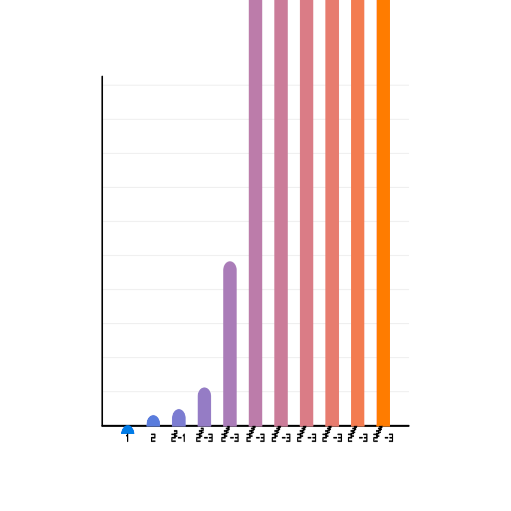
Test 2: Al Khwarizmi Geometric Algebra
✓ Success
Problem Prompt
**Objective**
Create a shader visualization of Al-Khwarizmi's geometric solution to quadratic equations, showing how Islamic mathematicians in the 9th century used geometric algebra to solve x² + 10x = 39, bringing the birth of algebra to visual life.
**Historical Context**
Muhammad ibn Musa al-Khwarizmi (c. 780-850 CE), working at the House of Wisdom in Baghdad, wrote "Al-Kitab al-Mukhtasar fi Hisab al-Jabr wal-Muqabala" (The Compendious Book on Calculation by Completion and Balancing), from which we derive the word "algebra." His geometric method for solving quadratics predates symbolic notation by centuries.
**Mathematical Specification**
1. **The Classic Problem: x² + 10x = 39**
- Al-Khwarizmi's geometric interpretation:
- Start with a square of side x (representing x²)
- Add four rectangles of dimensions x × 2.5 to the sides
- This creates a larger square of side (x + 5)
2. **Geometric Construction Steps**
Animate the following sequence:
- **Step 1**: Draw initial square of side x
- **Step 2**: Attach four rectangles (x × 2.5) to each side
- **Step 3**: Complete the figure with four corner squares (2.5 × 2.5)
- **Step 4**: Show that total area = x² + 10x + 25 = 39 + 25 = 64
- **Step 5**: Therefore (x + 5)² = 64, so x + 5 = 8, thus x = 3
3. **Islamic Geometric Styling**
- Use traditional Islamic color palette:
* Deep blue (#1E3A8A) for the original square
* Gold (#F59E0B) for the added rectangles
* White with blue outline for corner squares
- Add geometric Islamic patterns in margins:
* 8-fold star-and-polygon tessellation
* Arabesque vine patterns in corners
- Include Arabic calligraphy styling for numbers
4. **Visual Annotations**
- Label each area with both symbolic (x², 10x, 25) and numeric values
- Show running calculation: x² + 10x + 25 = 64
- Highlight the final solution x = 3 in ornate frame
- Add construction lines showing the completion process
5. **Rendering Requirements**
- Background: Traditional Islamic manuscript color (#FEF3C7)
- Use parallel projection (no perspective) as in historical diagrams
- Include decorative border with Islamic geometric patterns
- Smooth animation between construction steps (5 seconds total)
- Resolution: 1600×1600 pixels
**Educational Goals**
- Demonstrate the geometric origins of algebraic manipulation
- Show how "completing the square" literally meant completing a geometric square
- Honor Al-Khwarizmi's revolutionary contribution to mathematics
- Connect Islamic Golden Age mathematics to modern algebra
**Deliverable**
An animated shader that visually demonstrates Al-Khwarizmi's geometric algebra method, showing how abstract algebraic concepts emerged from concrete geometric constructions in 9th century Baghdad.
Judge Scores
Rendered Output
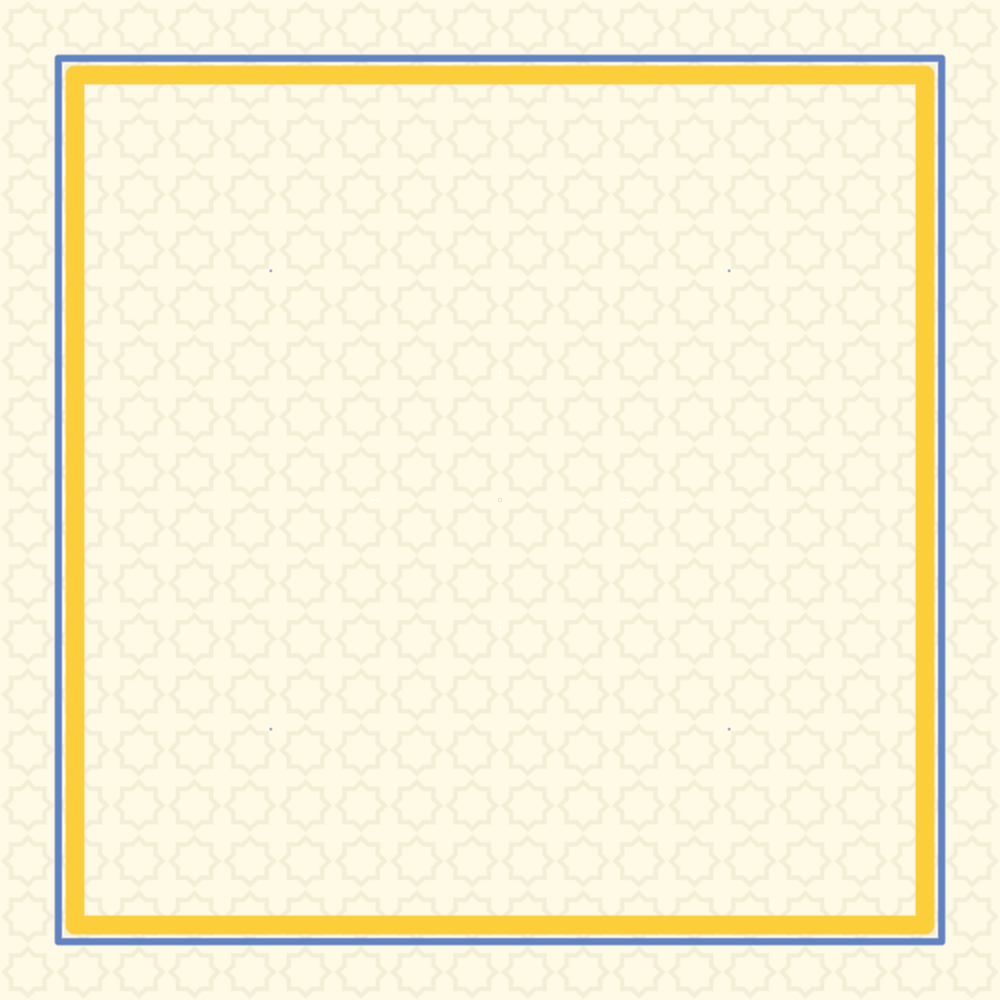
Test 3: Apollonian Gasket
✓ Success
Problem Prompt
Craft a high-resolution, jewel-like image of the classical Apollonian gasket that emerges as the limit set of a rank-2 Kleinian group. The red and green "facets" should interlace so finely that the boundary between them looks like crystalline edges under a microscope.
Mathematical engine:
1. Möbius generators: Work in the Riemann sphere (identify plane C∪{∞}). Let
M₁(z) = (2z+1)/(z+1), M₂(z) = (2z-1)/(z-1)
2. Symbolic address & parity: Every orbit point is encoded by a word in {1, 2}. Mark points whose last generator is even length word in red (#ff3355) and odd length in green (#33ff55).
3. Sampling:
- Begin with seed z₀ = 0
- Randomly walk 3,000,000 steps (alias method, equal probability)
- Discard first 12 iterates of every walk to bypass transient region; plot the next 9 iterations (depth-limiting to emphasise detail)
Projection & canvas:
- Use stereographic projection to map sphere to plane; scale so outermost circle fits a 2400 × 2400 px square with 120 px padding
- Background pure black (#000000)
- Each orbit point rendered as sub-pixel disk radius 0.6 px; enable additive alpha so high-density regions glow
- After plotting, apply a single-pass Gaussian bloom σ = 1 px, 40% opacity, to make bright clusters sparkle
File: PNG-24, sRGB
Deliverable: Outputs a single image.
Judge Scores
Rendered Output
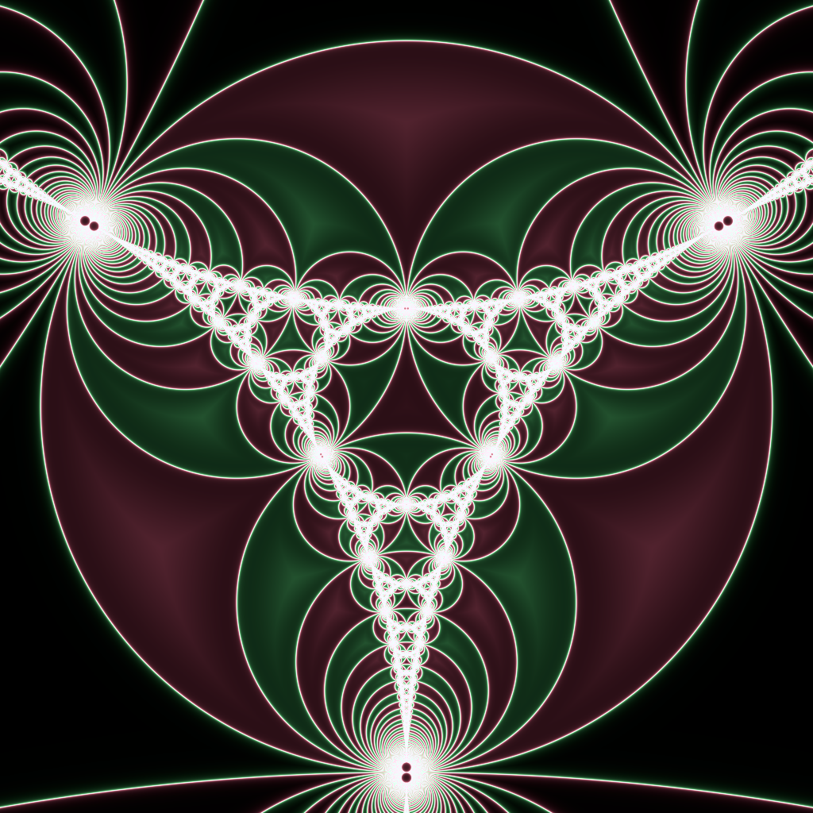
Test 4: Apollonius Conic Sections
✓ Success
Problem Prompt
**Objective**
Create a shader visualization of Apollonius's Conic Sections as they were understood in ancient Greece (~200 BCE), showing all three conic types emerging from a single double cone through different cutting planes, honoring the geometric construction methods of antiquity.
**Historical Context**
Apollonius of Perga (c. 240-190 BCE), known as "The Great Geometer," revolutionized the study of conic sections in his eight-volume treatise "Conics." Unlike his predecessors who used finite right circular cones, Apollonius considered arbitrary oblique double cones extending infinitely in both directions. His definitions of ellipse, parabola, and hyperbola remain in use today.
**Mathematical Specification**
1. **The Double Cone Construction**
- Generate an infinite double cone with vertex at origin
- Cone angle: 30° from vertical axis
- Use parametric form: x² + y² = (z·tan(30°))²
- Extend from z = -3 to z = 3 for visualization
2. **Three Classical Cutting Planes**
- **Ellipse**: Plane at 45° angle to cone axis, intersecting both nappes
- **Parabola**: Plane parallel to cone generator (exactly 30° from vertical)
- **Hyperbola**: Plane at 15° angle to cone axis (steeper than cone angle)
3. **Ancient Greek Construction Visualization**
- Show the cone as translucent wireframe (like ancient diagrams)
- Display cutting planes as semi-transparent colored surfaces
- Highlight the intersection curves in bold, using ancient color symbolism:
* Ellipse: Deep blue (celestial motion)
* Parabola: Green (earthly trajectories)
* Hyperbola: Red (infinite extension)
4. **Geometric Annotations**
- Add construction lines showing:
* Cone generators (straight lines on cone surface)
* Plane normal vectors
* Dandelin spheres tangent points (optional advanced feature)
- Include Greek letters α, β, γ for the three plane angles
5. **Rendering Requirements**
- Use orthographic projection (as Greeks would have drawn)
- Apply subtle shading to show 3D form while maintaining diagram clarity
- Background: Parchment color (#F4E8D0)
- Include a small inset showing Apollonius's original cone diagram style
- Resolution: 1600×1600 pixels minimum
**Educational Goals**
- Demonstrate how all conic sections emerge from a single geometric object
- Show the elegance of ancient Greek mathematical visualization
- Connect historical mathematics to modern computer graphics
- Honor Apollonius's systematic approach to mathematical classification
**Deliverable**
A single shader that renders this complete historical mathematical visualization, bringing ancient geometric wisdom into the modern digital age.
Judge Scores
Rendered Output
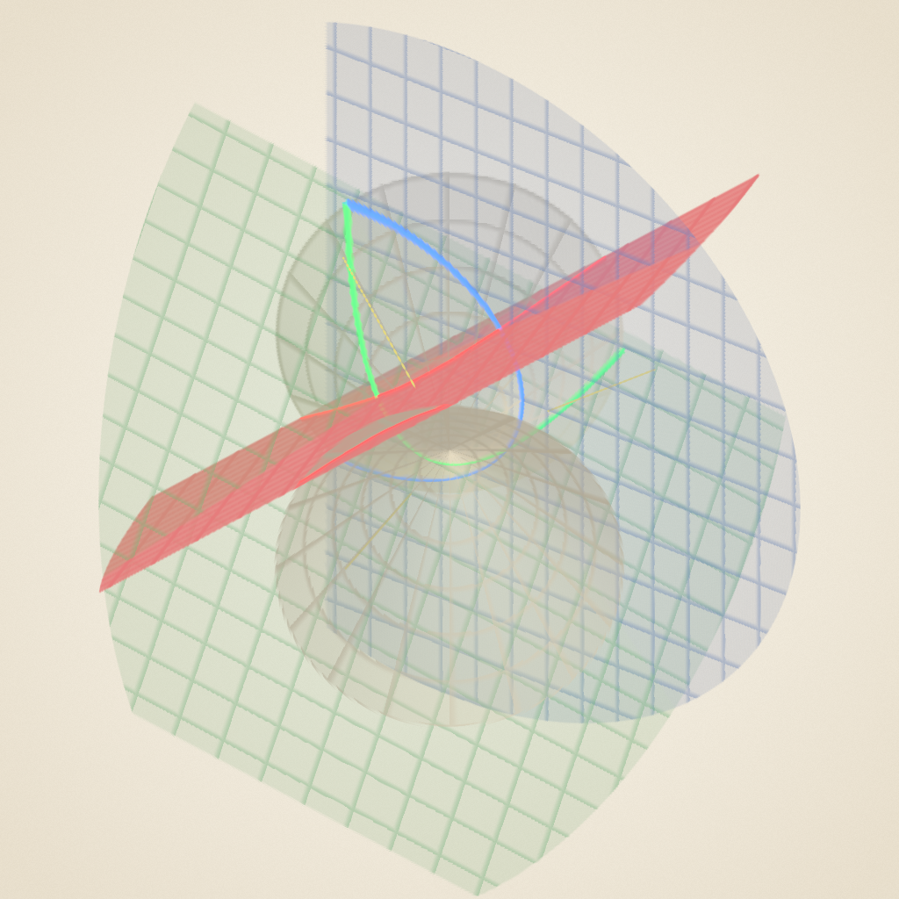
Test 5: Archimedean Spiral Galaxy
✓ Success
Problem Prompt
**Objective** – Render a face‑on **two‑arm** spiral galaxy whose stellar arms follow the *Archimedean* law $r = a\theta$.
**Star‑field specification**
* **Spiral parameters** $a = 0.25$ (units: galaxy‐normed). Two arms offset by $\pi$. θ spans [0, 8π] (four full turns).
* **Star sampling** – generate 120 000 stars:
* Draw θ uniformly; compute arm centre $r=a\theta$.
* Tangential spread: add Gaussian offset Δθ ~ $\mathcal N(0,\sigma_{θ}^{2})$ with $\sigma_{θ}=0.035$.
* Radial blur: Gaussian offset Δr ~ $\mathcal N(0,\sigma_{r}^{2})$, where $\sigma_{r}=0.025(1+0.5θ)$.
* **Radial density fall‑off** weight $w = \exp(-r/3)$; keep star if $u<w$ where $u\sim U(0,1)$.
* **Background** – 10 000 disc‑halo stars: radius sampled $p(r)\propto r\,e^{-r/3}$ up to $r=10$; angle uniform; small white dots.
**Colour & magnitude**
* Star colour temperature $T(r)=7200-250r\;\text{K}$; convert to sRGB with black‑body approximation.
* Star brightness proportional to $e^{-0.5r}$ (clipped). Render each star as Gaussian sprite of FWHM = 0.03 + 0.004 r.
**Canvas & camera**
* Orthographic view of square region r ≤ 10. Resolution 3000 × 3000 px, black background.
* Supernova‑like core glow: add additive circular bloom (radius 0.4, colour #ffffaa, opacity 0.6).
**Deliverable** – 16‑bit PNG.
Judge Scores
Rendered Output
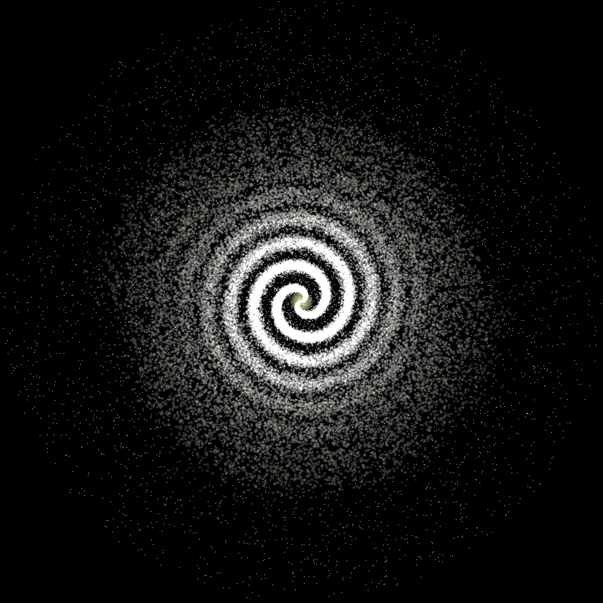
Test 6: Archimedes Spiral
✓ Success
Problem Prompt
**Objective**
Create a shader visualization of Archimedes' Spiral with his original geometric properties and applications, including the trisection of angles and squaring of the circle, as discovered in ancient Syracuse circa 225 BCE.
**Historical Context**
Archimedes of Syracuse (c. 287-212 BCE) discovered this spiral while investigating uniform motion along a rotating ray. His work "On Spirals" contains 28 propositions about this curve, including methods for trisecting angles and finding areas. The spiral r = aθ represents one of the earliest examples of a curve defined by a relationship between radius and angle.
**Mathematical Specification**
1. **The Archimedean Spiral**
- Primary spiral: r = θ/π for θ ∈ [0, 8π] (4 complete turns)
- Show uniform spacing between turns (key property)
- Animate the generation: point moving outward at constant speed while ray rotates uniformly
2. **Historical Applications Visualization**
**A. Angle Trisection**
- Given angle AOB = 60°
- Draw arc from O intersecting OB at point C
- Find point P on spiral where OP = (1/3)OC
- Show that angle AOP = 20° (exactly 1/3 of 60°)
- Highlight construction with golden lines
**B. Squaring the Circle (First Turn)**
- Show that area inside first turn equals πr²/3
- Visualize Archimedes' exhaustion method:
* Inscribed polygons of 6, 12, 24, 48 sides
* Color gradient showing convergence to exact area
**C. Tangent Properties**
- At point P(r,θ), show tangent line
- Display angle ψ between tangent and radius vector
- Show Archimedes' result: tan(ψ) = r/a
3. **Ancient Greek Styling**
- Background: Aged papyrus texture (#F5E6D3)
- Spiral in deep blue ink (#1E3263)
- Construction lines in faded red (#8B4513)
- Greek annotations: use actual Greek letters (α, β, γ, θ, π)
- Add water damage and aging effects to edges
4. **Geometric Annotations**
- Label key points with Greek letters
- Show measurement marks along spiral
- Include Archimedes' original notations where known
- Add small diagrams showing:
* Uniform motion principle
* Area calculation method
5. **Rendering Requirements**
- Use compass-and-straightedge construction aesthetic
- Show construction marks and compass arc traces
- Include Archimedes' portrait medallion in corner
- Subtle animation of spiral generation (7 seconds)
- Resolution: 1600×1600 pixels
**Educational Goals**
- Demonstrate Archimedes' genius in discovering spiral properties
- Show practical applications to classical problems
- Visualize the exhaustion method preceding calculus by 2000 years
- Connect ancient Greek mathematics to modern polar coordinates
**Deliverable**
A shader that brings Archimedes' original spiral investigations to life, showing both the mathematical beauty and practical applications that made this one of antiquity's great mathematical discoveries.
Judge Scores
Rendered Output
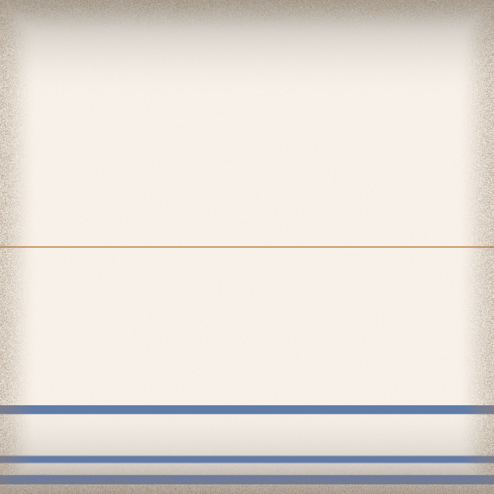
Test 7: Binary Tree Fractal
✓ Success
Problem Prompt
Grow an organic winter tree suspended in empty space—trunk straight upward, two children per branch, no leaves. Lighting should emphasise delicate twig silhouettes.
Recursive geometry:
- Trunk segment length = 1, radius = 0.08
- Each branch splits into two at a 45° angle from parent direction, rotated ±35° about parent axis to avoid planar look
- Length scale factor 0.7; radius factor 0.6
- Depth 7 (level 0 trunk → level 7 twigs). Expected segments 2⁷-1 = 127
Implementation notes:
- Represent branches as tapered cylinders; smooth-join with spherically-blended joints
- Material – dark-bark (#4b3726), roughness 0.7
Scene & camera:
- Camera (3,-6,2.5) aiming at origin; FOV 40°
- Three-point lights: key (3,-5,5), fill (-2,-6,4) 40%, rim (0,0,6) 30%
- Background gradient sky (zenith #d7ecff → horizon #ffffff)
File: 2400×2400
Deliverable: Outputs a single image.
Judge Scores
Rendered Output
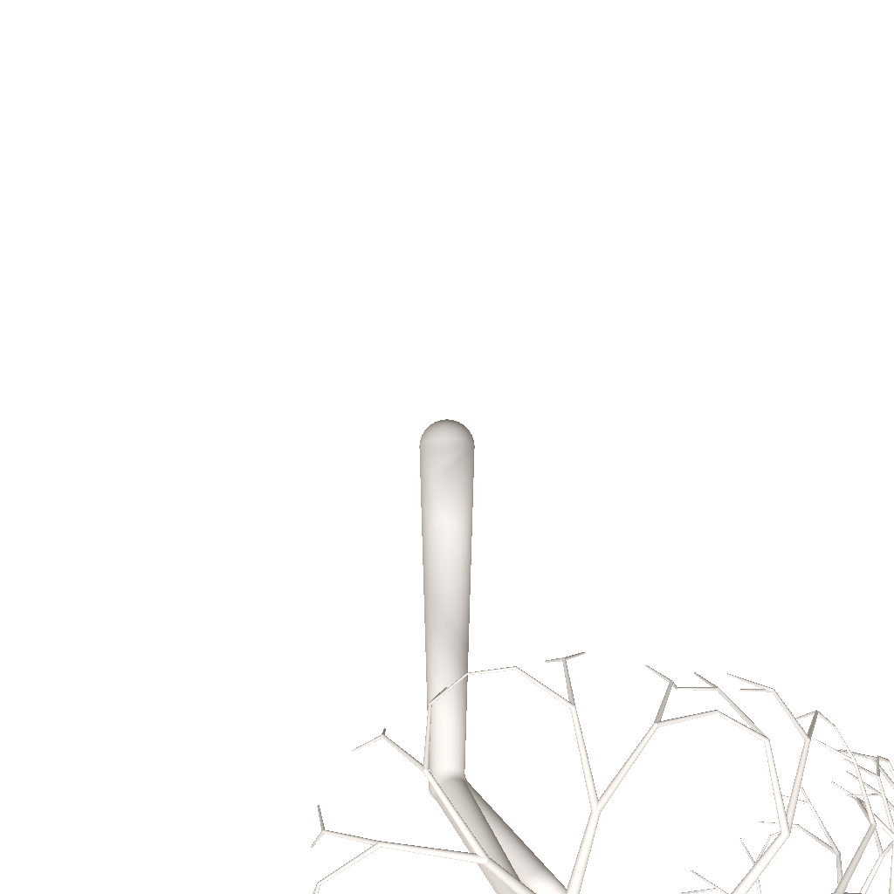
Test 8: Brahmagupta Cyclic Quadrilaterals
✓ Success
Problem Prompt
Create a single-file HTML shader that visualizes Brahmagupta's Cyclic Quadrilaterals and his formula for their area. The visualization should:
1. Display a cyclic quadrilateral inscribed in a circle
2. Animate the quadrilateral vertices moving along the circle while maintaining the cyclic property
3. Calculate and display the area using Brahmagupta's formula:
- Area = √[(s-a)(s-b)(s-c)(s-d)]
- Where s = (a+b+c+d)/2 (semiperimeter)
- And a, b, c, d are the side lengths
4. Show real-time updates of:
- Side lengths (a, b, c, d)
- Semiperimeter (s)
- Area calculation
5. Demonstrate that the formula works for any cyclic quadrilateral configuration
6. Include special cases:
- Square (maximum area for given perimeter)
- Rectangle
- Irregular cyclic quadrilateral
7. Canvas size should be 2000×2000 pixels
8. Use color coding for sides and corresponding values in the formula
9. Add smooth transitions between different quadrilateral configurations
10. Include Ptolemy's theorem visualization as a bonus (ac + bd = ef for diagonals e, f)
The implementation should be a complete, self-contained HTML file with embedded WebGL shader code. The visualization should elegantly demonstrate this beautiful result from ancient Indian mathematics.
Judge Scores
Rendered Output
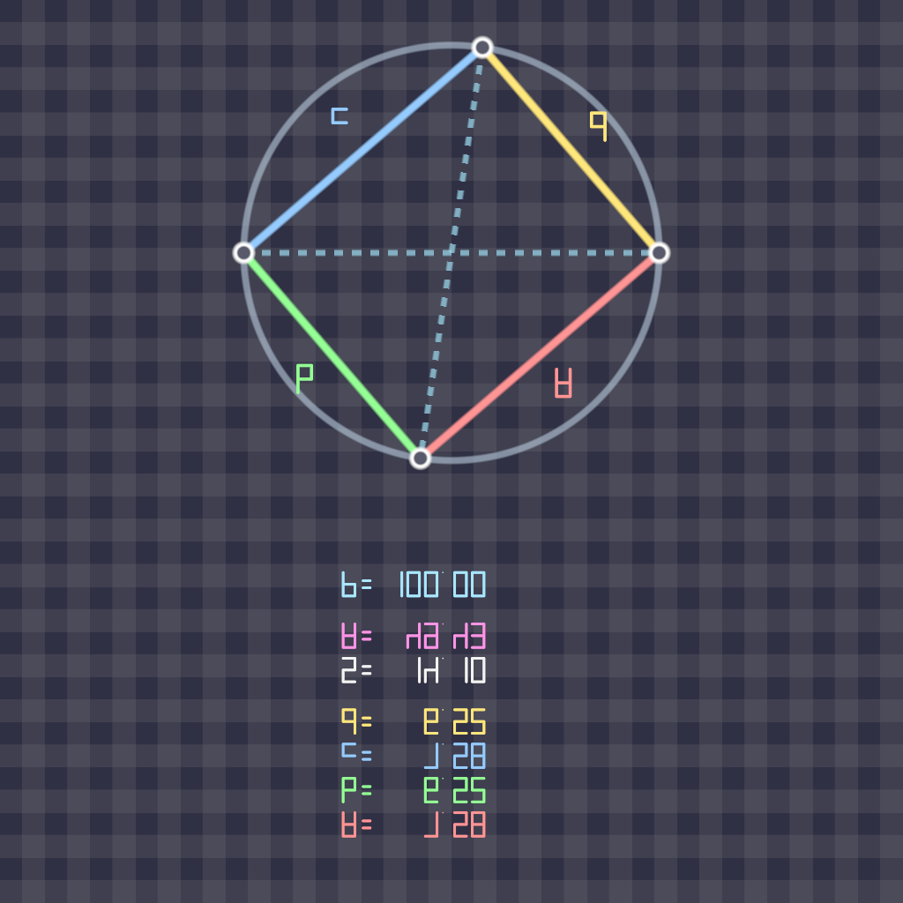
Test 9: Braided Rope
✓ Success
Problem Prompt
**Objective**
Create a three-strand braided rope using helical geometry with proper phase relationships.
**Geometry**
Three helices on cylinder radius 0.6, pitch 1.8, phase offsets 0, 120°, 240°. Tube radius 0.15.
**Styling**
Colour strands #c96, #6c9, #96c. Cylinder core hidden. Camera (3,2,2). 2000×1800 PNG.
**Deliverable** PNG.
Judge Scores
Rendered Output
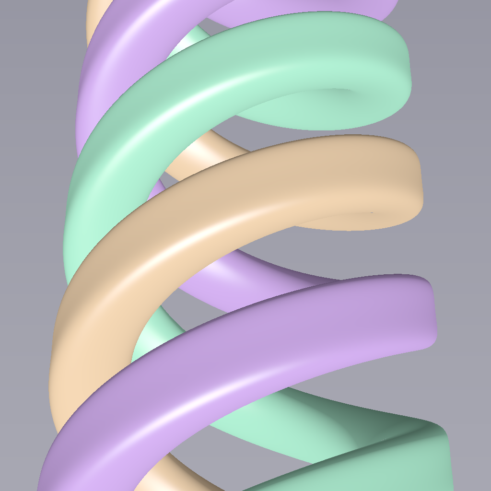
Test 10: Butterfly Curve
✓ Success
Problem Prompt
# Butterfly Curve
Create an animated WebGL visualization of the transcendental butterfly curve with color gradients that emphasize its wing-like structure.
## Requirements:
1. Implement the butterfly curve equation:
- x = sin(t) * (e^cos(t) - 2*cos(4t) - sin(t/12)^5)
- y = cos(t) * (e^cos(t) - 2*cos(4t) - sin(t/12)^5)
2. Animate the curve drawing from t=0 to t=12π
3. Apply a color gradient that changes based on:
- The angle from center
- The distance from center
- Creating a butterfly wing effect
4. Add particle effects that follow the curve path
5. Implement a subtle glow effect on the curve
6. Include smooth camera zoom that reveals the full pattern
7. Add a complementary animated background
Judge Scores
Rendered Output
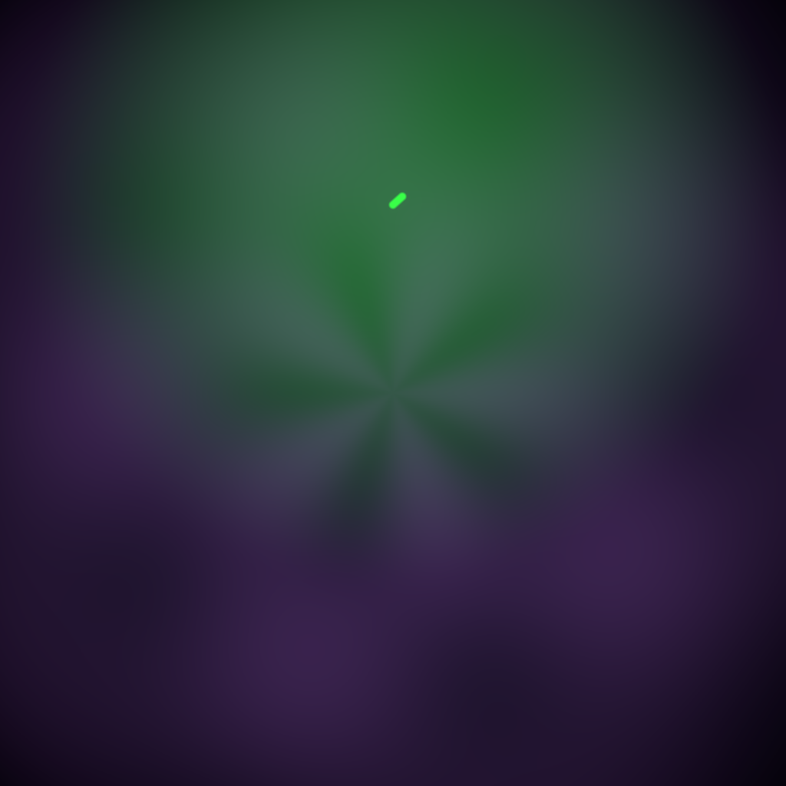
Test 11: Calabi Yau Manifold
✓ Success
Problem Prompt
**Objective**
Display the real 3‑D isosurface
$
\Re\!\Bigl(\sum_{i=0}^{4}z_i^{5}-5\psi\prod_{i=0}^{4}z_i\Bigr)=0
$
under the constraint $\sum_{i=0}^{4}|z_i|^{2}=1$ (the quintic CY), intersected with the hyperplane $z_{3}=z_{4}=0$, for $\psi=0.4$. Map $(z_{0},z_{1},z_{2})$ to $\mathbb R^{3}$ via stereographic projection.
**Numerics**
* Sample 400³ grid on cube $[-1.5,1.5]^{3}$.
* Use marching cubes at isovalue 0 with linear interpolation.
**Styling**
* Colour by vertex normal: n·(0.3,0.7,0.6) mapped to viridis palette.
* Add subsurface‐scattering fake: ambient 0.3 + diffuse 0.5 + specular 0.2 (shininess 128).
* Camera (4,4,4) → origin, FOV 35°. Background #001018.
* 2600 × 2600 px PNG, 4× SSAA.
**Deliverable** PNG.
Judge Scores
Rendered Output
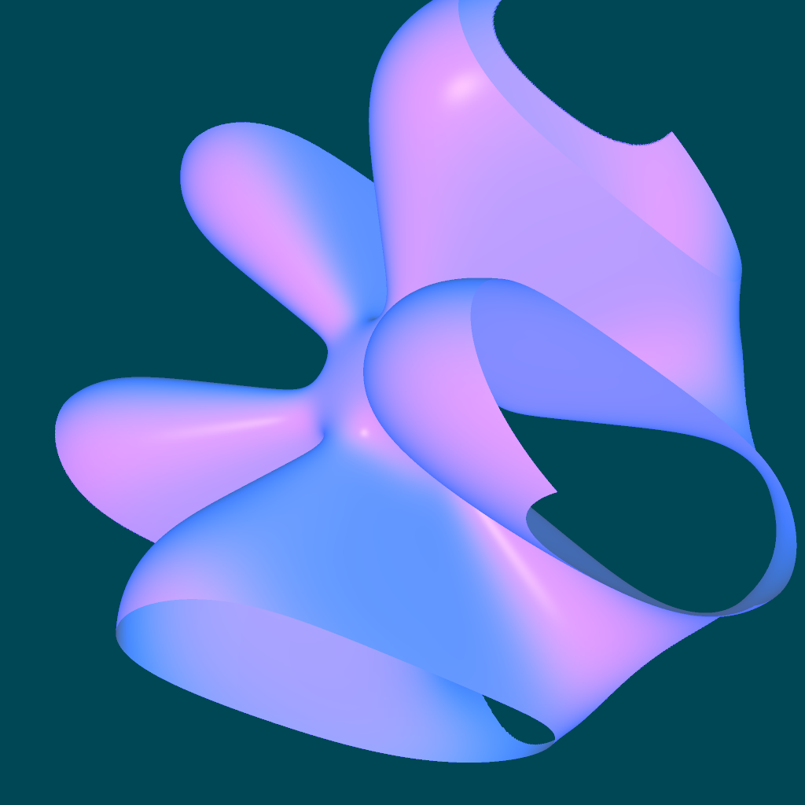
Test 12: Capsule Shape
✓ Success
Problem Prompt
Create a 3D capsule shape (cylinder with hemispherical caps) with height 3.0 and radius 0.8, oriented vertically. Material: semi-glossy porcelain white with subtle blue undertones. Lighting: three-point setup with rim light. Background: dark gradient. Camera: slight low angle to emphasize height.
Outputs a single image.
Judge Scores
Rendered Output
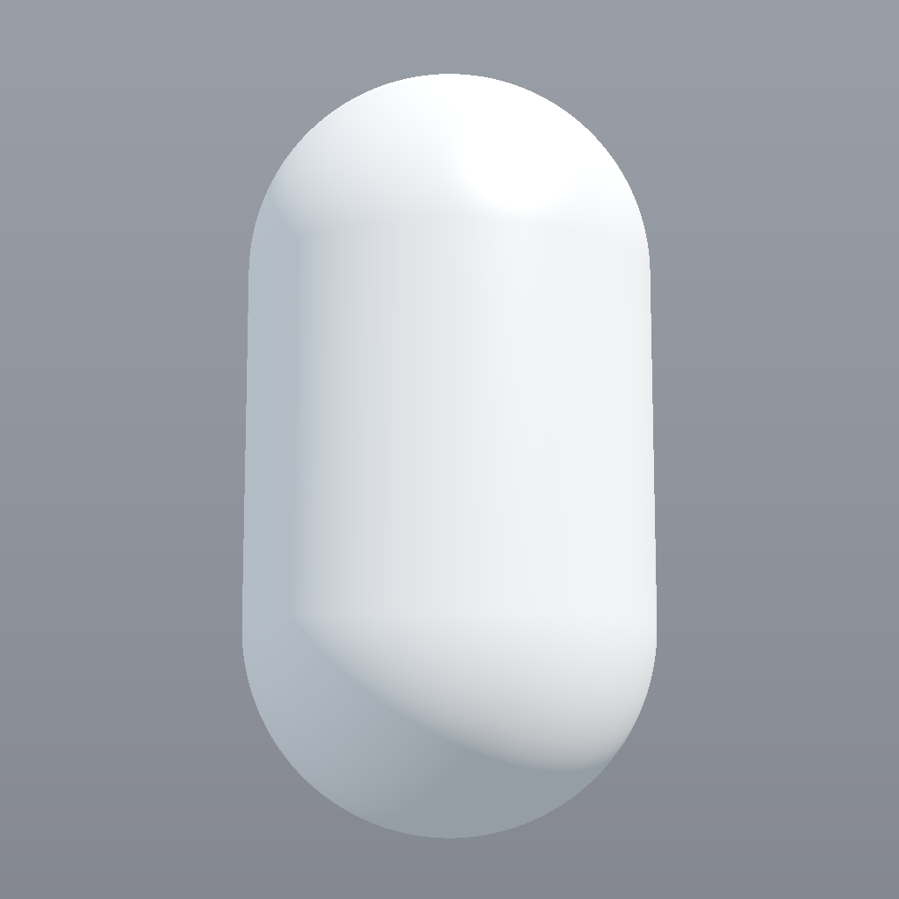
Test 13: Cardioid Limacon Collection
✓ Success
Problem Prompt
# Cardioid and Limaçon Collection
Create a WebGL visualization showcasing various members of the limaçon family, including the special case of the cardioid, with interactive parameter control.
## Requirements:
1. Implement the general limaçon equation: r = a + b*cos(θ)
2. Display multiple curves showing:
- Cardioid (a = b)
- Limaçon with inner loop (a < b)
- Dimpled limaçon (a > b but a < 2b)
- Convex limaçon (a ≥ 2b)
3. Use different colors for each curve type
4. Add animated parameter transitions showing how curves morph between types
5. Include a subtle grid or polar coordinate system for reference
6. Implement smooth curve rendering with appropriate sampling
7. Add labels or legends identifying each curve type
Judge Scores
Rendered Output
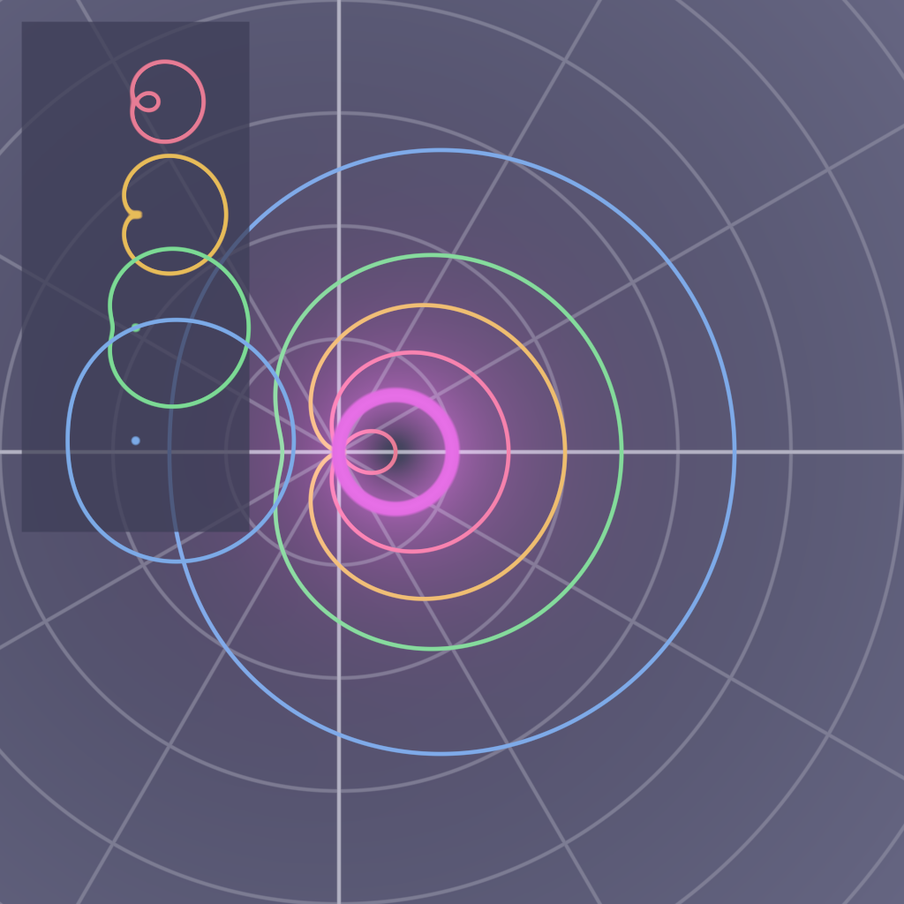
Test 14: Chinese Remainder Sunzi
✓ Success
Problem Prompt
**Objective**
Create a shader visualization of the Chinese Remainder Theorem as presented in Sunzi Suanjing (3rd-5th century CE), showing the ancient Chinese "Ta-yen" method for solving systems of modular equations, with visual connections to its modern applications in cryptography.
**Historical Context**
The Chinese Remainder Theorem appears in Sunzi Suanjing (Master Sun's Mathematical Manual) with the famous problem: "Find a number that leaves remainder 2 when divided by 3, remainder 3 when divided by 5, and remainder 2 when divided by 7." This method, refined over centuries by Chinese mathematicians, predates similar Western discoveries by over 1000 years.
**Mathematical Specification**
1. **The Classic Problem Visualization**
Solve: x ≡ 2 (mod 3), x ≡ 3 (mod 5), x ≡ 2 (mod 7)
- Display three rotating circles representing moduli 3, 5, 7
- Mark positions 0,1,2 on the mod 3 circle
- Mark positions 0,1,2,3,4 on the mod 5 circle
- Mark positions 0,1,2,3,4,5,6 on the mod 7 circle
- Highlight the required remainders in red
2. **Ancient Chinese Solution Method**
Animate the "Da-yan" (Great Extension) algorithm:
- Find M = 3×5×7 = 105
- Calculate M₁ = 35, M₂ = 21, M₃ = 15
- Show inverse finding: 35×2 ≡ 1 (mod 3), etc.
- Build solution: x = 2×35×2 + 3×21×2 + 2×15×1
- Reveal answer: x ≡ 23 (mod 105)
3. **Visual Number Line**
- Display numbers 0-105 as a spiral
- Color code by remainders:
* Red tint for x ≡ 2 (mod 3)
* Blue tint for x ≡ 3 (mod 5)
* Green tint for x ≡ 2 (mod 7)
- Show convergence at x = 23 (all colors combine)
4. **Traditional Chinese Styling**
- Background: Rice paper texture (#FFF8DC)
- Ink brush stroke effects for circles
- Chinese numerals (一二三四五六七) alongside Arabic
- Traditional seal stamp with "孫子算經" (Sunzi Suanjing)
- Decorative cloud patterns in margins
5. **Modern Connection Visualization**
Show RSA encryption parallel:
- Mini-visualization of how CRT speeds up RSA decryption
- Split large modulus into coprime factors
- Parallel computation visualization
- Time comparison: direct vs CRT method
6. **Historical Annotations**
- Portrait of ancient Chinese mathematician
- Timeline: Sunzi (300s) → Qin Jiushao (1247) → Gauss (1801)
- Original problem text in classical Chinese
- Translation: "What number has these remainders?"
**Rendering Requirements**
- Smooth rotation of modular circles
- Particle effects showing number flow
- Calligraphy-style number rendering
- Subtle animation of solution building
- Resolution: 1600×1600 pixels
**Educational Goals**
- Honor ancient Chinese mathematical achievements
- Show elegance of modular arithmetic visualization
- Connect ancient wisdom to modern cryptography
- Demonstrate cultural continuity in mathematics
**Deliverable**
A shader that brings the Chinese Remainder Theorem to life through beautiful visualization, showing how ancient Chinese mathematicians solved complex modular systems centuries before the rest of the world, rendered in traditional Chinese artistic style while demonstrating modern relevance.
Judge Scores
Rendered Output
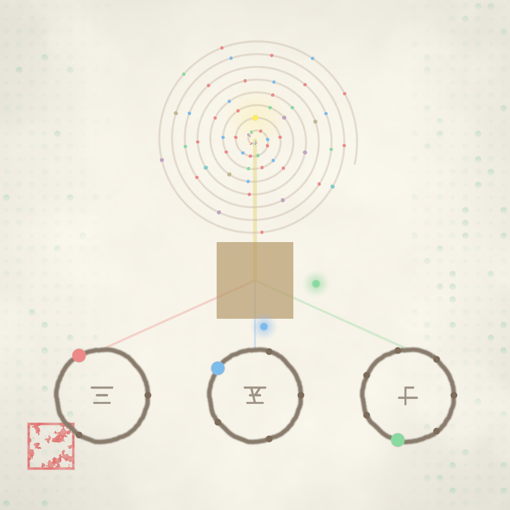
Test 15: Chinese Remainder Theorem
✓ Success
Problem Prompt
Create a single-file HTML shader that illustrates the Chinese Remainder Theorem through an interactive visualization. The visualization should:
1. Demonstrate the system of congruences:
- x ≡ 2 (mod 3)
- x ≡ 3 (mod 5)
- x ≡ 2 (mod 7)
2. Create three circular number lines (modular arithmetic wheels) for mod 3, 5, and 7
3. Animate a synchronized counter that highlights valid solutions
4. Show numbers 0-105 being tested, highlighting those that satisfy each congruence
5. When a number satisfies all three congruences (x = 23, 83), create a visual celebration:
- Pulse all three wheels
- Display the solution prominently
- Show the verification: 23 mod 3 = 2, 23 mod 5 = 3, 23 mod 7 = 2
6. Canvas size should be 2400×1600 pixels
7. Use distinct colors for each modular system
8. Include the theorem statement and solution method
9. Add smooth transitions and clear visual feedback
The implementation should be a complete, self-contained HTML file with embedded WebGL shader code. The visualization should make the abstract concept of the Chinese Remainder Theorem concrete and understandable.
Judge Scores
Rendered Output
Test 16: Complex Analysis Stained Glass
✓ Success
Problem Prompt
**Objective**
Render **complex analysis** concepts as **illuminated stained glass windows**, where analytic functions create light patterns and singularities form glass structures.
**Mathematical recipe**
1. Base function: f(z) = (z² - 1)/(z² + 1) with branch cuts
2. Domain coloring enhanced for stained glass:
- Magnitude |f(z)| determines glass opacity (dark → transparent)
- Argument arg(f(z)) sets hue via continuous color wheel
- Add lead came at |f(z)| = 2ⁿ contours (n integer)
3. Singularities become ornate rose windows:
- Simple poles: radial symmetry with n petals for order n
- Essential singularities: fractal Celtic knot patterns
- Branch points: spiral glass arrangements
4. Conformal mapping properties:
- Right angles preserved in lead came intersections
- Circles → circles visible in glass piece boundaries
5. Residue theorem: light intensity at poles proportional to residue
**Styling**
* Gothic cathedral window framework (pointed arch)
* Realistic glass materials: varying thickness creates color depth
* Lead came with aged patina and structural bolts
* Sunlight from behind: caustics project function onto floor
* Glass imperfections: bubbles, waves near singularities
* Dust motes visible in light beams
* Stone window frame with carved mathematical symbols
* View from inside cathedral, darkened interior
* Camera at (0, 0, -10), looking straight at window; FOV 40°
* Resolution 2400 × 2400 px, ray-traced lighting
**Deliverable** Single PNG showing complex function as stained glass masterpiece
Judge Scores
Rendered Output
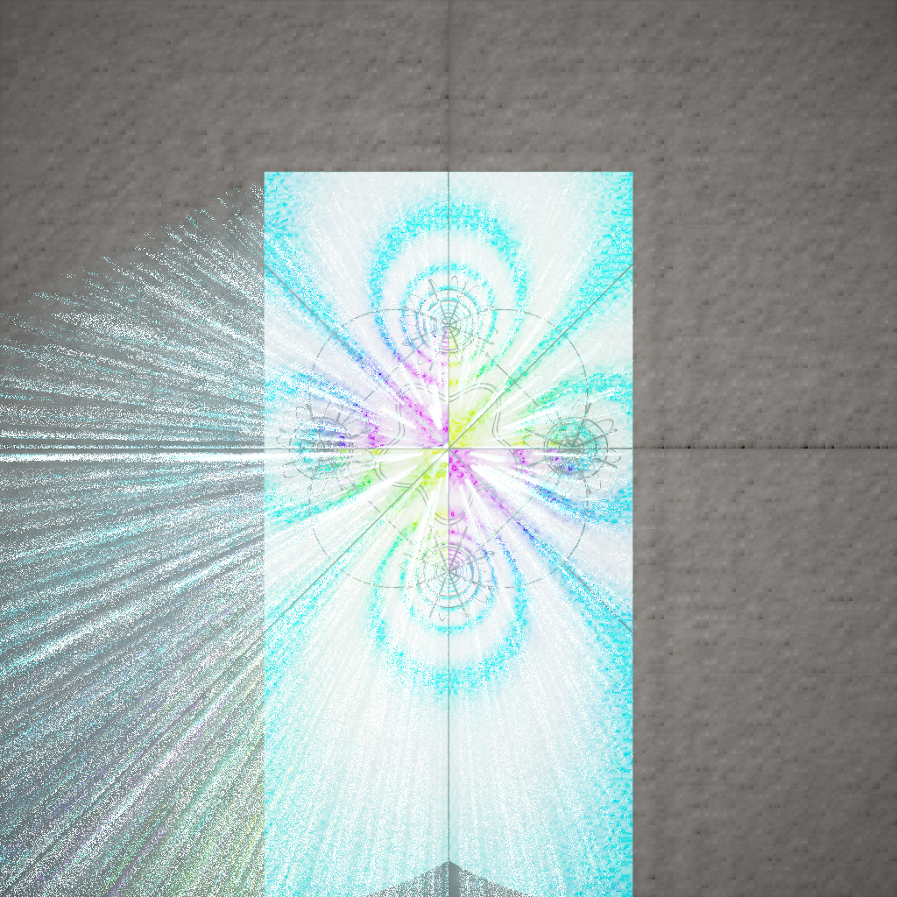
Test 17: Compound Polyhedra Stella Octangula
✓ Success
Problem Prompt
Create a stella octangula (compound of two interpenetrating tetrahedra) with edge length 2.0. Material: transparent crystal (IOR 1.5) with slight blue tint, 80% transparency. Include internal reflections and refractions. Lighting: dramatic spot from above. Background: black. Camera: angled to show interpenetration clearly.
Outputs a single image.
Judge Scores
Rendered Output
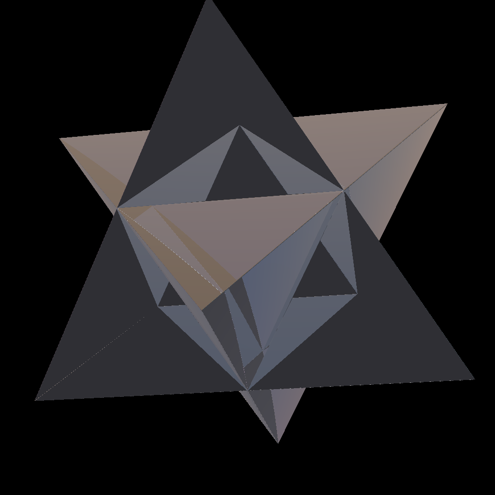
Test 18: Conformal Spiral Mapping
✓ Success
Problem Prompt
**Objective**
Visualize **conformal spiral mapping** transforming a rectangular grid into an Archimedean spiral while preserving local angles and revealing the beauty of conformal geometry.
**Mathematical recipe**
1. Start with rectangular grid in complex plane: -2 ≤ Re(z) ≤ 2, -2 ≤ Im(z) ≤ 2.
2. Apply conformal spiral map: w = exp(αz) where α = 0.2 + 0.3i.
- This combines scaling (e^(0.2Re(z))) with rotation (0.3Im(z)).
3. The transformation maps:
- Vertical lines → logarithmic spirals.
- Horizontal lines → radial rays from origin.
4. Grid: 41×41 lines (spacing 0.1).
5. Embed result in 3D with height based on |w|:
- h(w) = 0.5·log(1 + |w|) for smooth elevation.
**Styling**
* Grid lines: Thin tubes (radius 0.008) with glass-like material.
* Color scheme: Vertical lines in blue-cyan gradient, horizontal in red-orange.
* Height-based fog: Denser at higher elevations.
* Central singularity marked with glowing white sphere.
* Caustic lighting effects from refractive grid.
* Dark background with subtle radial gradient.
* Camera at (3, 3, 4), looking down at spiral; FOV 45°.
* Resolution 2048 × 2048 px, 4× SSAA.
**Deliverable** Single PNG showing the conformal transformation creating a beautiful spiral grid pattern.
Judge Scores
Rendered Output
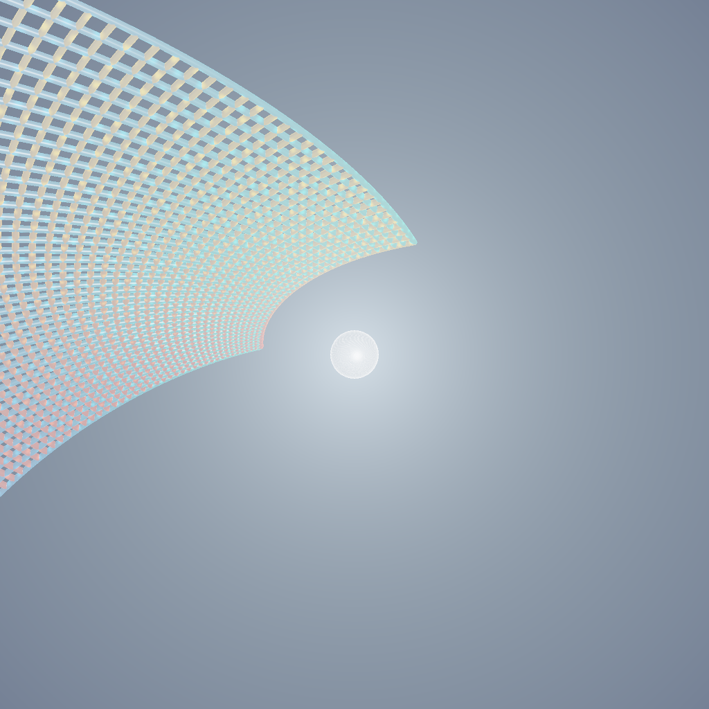
Test 19: Costa Minimal Surface
✓ Success
Problem Prompt
The Costa surface should appear like a delicate, three-winged glass sculpture suspended in mid-air. Viewers must immediately notice:
1. The vertical catenoidal neck shooting up/down
2. The two horizontal catenoidal ends
3. The saddle-like junction that hints at the single toroidal handle (genus 1)
Mathematical data:
- Weierstrass representation: g(z) = z, dh = λ*dz/(z³-1), λ = 0.252 (period-closing)
- Parameter domain: hexagonally-fundamental region expressed by polar grid in the z-plane with 450 (radial) × 300 (angular) samples. Use conjugate pairing to close periods and tile just once.
- Coordinate integration via Kummer surface tracking; step size adaptive to local curvature. Terminate when |z| > 4 or |Re ∫| > 5.
Mesh & normals:
- Weld identical boundary vertices to enforce genus 1 and Euler characteristic -2
- Compute mean curvature H at each vertex; store in vertex attribute
Shading:
- Base material – frosted glass (IOR 1.5, roughness 0.2)
- Curvature tint – mix 80% material colour with lime-green (#55FF88) where |H|<5×10^-4
- Lighting – three-point studio rig: key (4,4,6), fill (-6,-2,5) intensity 0.5, rim (0,0,8) intensity 0.7, all pure white
Camera & framing:
- Perspective; focal length 35 mm, sensor 36 mm (true-to-life field)
- Position (6,4,3), look-at (0,0,0). Orbit lines of sight by 5° downwards so the vertical neck is not foreshortened.
- Depth-of-field: focus distance 5 units, f/2 blur for background only
Extras:
- Add invisible ground-plane with shadow-catcher for soft shadow
- Transparent background (#00000000) – allows later compositing
- PNG-32 (RGBA), 2600 × 1600 px
Deliverable: Outputs a single image.
Judge Scores
Rendered Output
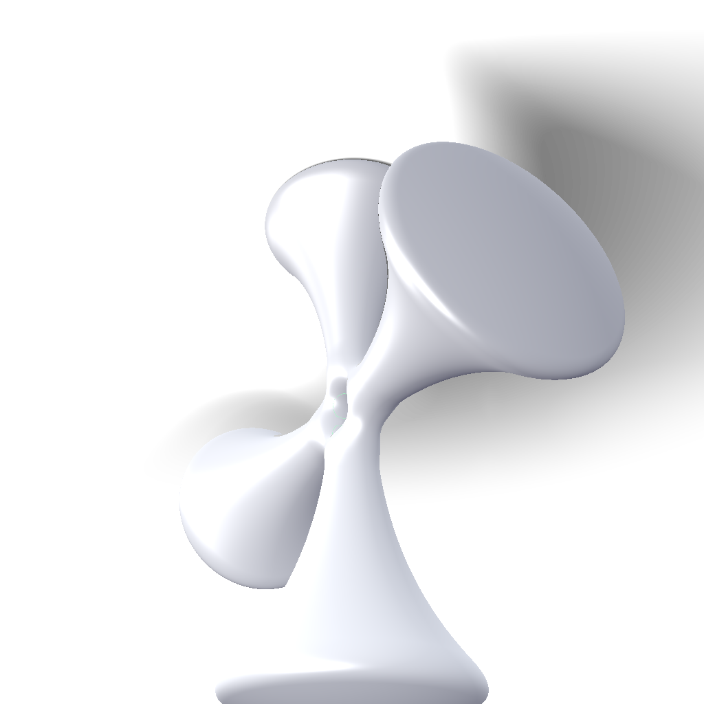
Test 20: Crystal Lattice Diffraction
✓ Success
Problem Prompt
**Objective**
Simulate and visualise the 2‑D X‑ray diffraction pattern of a perfect *face‑centred cubic* (FCC) crystal viewed down the ⟨001⟩ zone axis.
**Physical model**
1. **Real‑space lattice** FCC with lattice constant $a=1$. Scatterers at fractional positions (0,0,0), (0,½,½), (½,0,½), (½,½,0).
2. **Scattering amplitude** Kinematic approximation; each scatterer contributes unit complex amplitude.
3. **Reciprocal lattice** Compute structure factors $F_{\mathbf G}$ for all integer Miller indices $(h,k,0)$ with $‖\mathbf G‖\le20\,(2\pi/a)$. Allowed reflections satisfy $h+k$ even. Intensity $I_{\mathbf G}=|F_{\mathbf G}|^{2}$.
4. **Detector plane** Normal to beam; place origin at transmitted beam (which may be suppressed for clarity). Pixel coordinates $q_x,q_y\propto h,k$.
**Rendering instructions**
* Canvas 1800 × 1800 px, black background.
* Draw each reflection as a filled disk. Disk centre at $(h,k)$ scaled so that the (20,0) spot sits 90 % of radius from centre.
* Disk radius = $4+‖(h,k)‖/6$ px (larger spots at higher order).
* Intensity → greyscale: $I=0$ → #000000, max intensity → #FFFFFF, linear mapping.
* Suppress the (0,0) direct beam.
* No axes, text or borders.
**Deliverable**
16‑bit PNG, gamma 2.2.
Judge Scores
Rendered Output
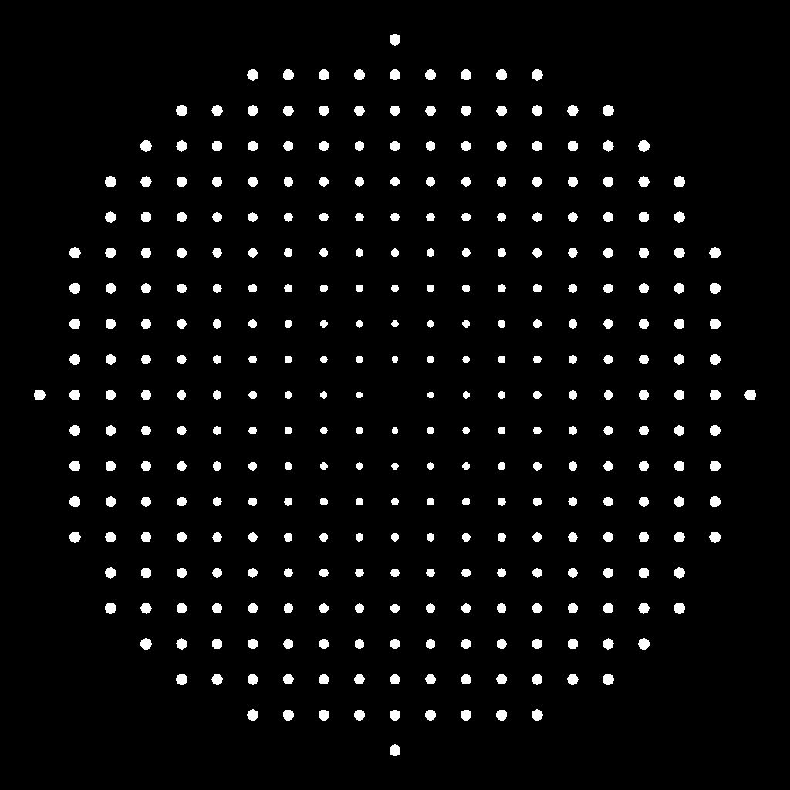
Test 21: Cycloid Wave Patterns
✓ Success
Problem Prompt
**Objective** – Visualise the classical cycloid produced by a circle of radius $r=1$ rolling along the x‑axis, then tile it to form a wave pattern.
**Curve**
$
x(θ)= θ - \sin θ,\qquad y(θ)= 1 - \cos θ,\quad θ∈[0,2π].
$
**Wave tiling**
* Repeat the cycloid for 6 consecutive periods (θ ∈ [0,12π]); join end‑to‑end.
* Mirror the entire wave about the x‑axis to produce a "trochoid trough" pattern.
**Styling**
* Positive‑y wave: stroke #ffaa00, 5 px. Negative‑y mirror: stroke #0066ff, 5 px.
* Thin grey baseline at y=0, 1 px.
* Canvas 2600 × 800 px, 100 px margin left/right. White background.
**Deliverable** – PNG.
Judge Scores
Rendered Output
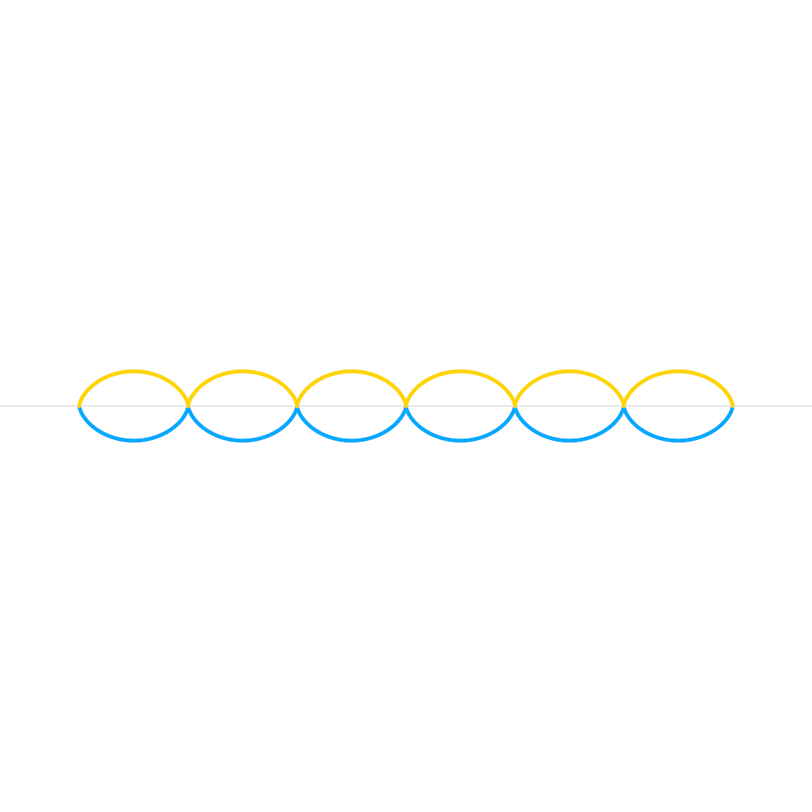
Test 22: Cylindrical Bend Deformation
✓ Success
Problem Prompt
**Objective**
Demonstrate **cylindrical bend deformation** by transforming a rectangular grid into a smoothly curved cylindrical surface, like bending a sheet of paper.
**Mathematical recipe**
1. Start with flat rectangular grid (4×2 units) in XY plane, 40×20 segments.
2. Apply cylindrical bend transformation with radius R = 1.5:
- Bend angle θ = x / R (x-position determines angle).
- New position: x' = R·sin(θ), y' = y, z' = R·(1 - cos(θ)).
- Preserve y-coordinates (bend axis).
3. Add thickness (0.05 units) to create solid bent plate.
4. Maintain grid line structure for visual clarity.
5. Apply smooth shading with preserved surface normals.
**Styling**
* Material: Brushed metal with anisotropic highlights along bend direction.
* Color: Gradient from cool steel blue (inner curve) to warm bronze (outer curve).
* Grid lines: Subtle embossed effect, darker than base material.
* Three-point lighting emphasizing curvature.
* Soft shadows and ambient occlusion.
* Camera at (2.5, 2, 3), looking at origin; FOV 40°.
* Medium grey background (0.3, 0.3, 0.35).
* Resolution 2048 × 2048 px, 4× SSAA.
**Deliverable** Single PNG showing the bent rectangular grid with clear cylindrical curvature.
Judge Scores
Rendered Output
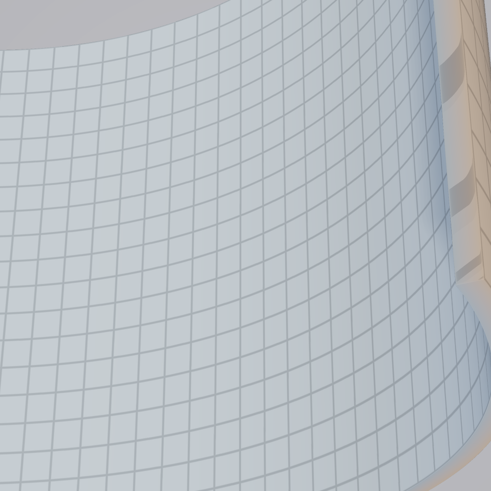
Test 23: Differential Equations Water
✓ Success
Problem Prompt
**Objective**
Render **differential equations** as **living water surfaces**, where solutions manifest as fluid dynamics and wave patterns.
**Mathematical recipe**
1. Base equation: ∂²u/∂t² = c²∇²u - γ∂u/∂t (damped wave equation)
2. Initial conditions create "equation signature":
- Linear DE: straight wave fronts
- Nonlinear DE: soliton formations
- Chaotic DE: turbulent mixing zones
3. Boundary conditions as shoreline geometries:
- Dirichlet: solid walls (perfect reflection)
- Neumann: gradual beaches (partial absorption)
- Periodic: infinite ocean illusion
4. Multiple equations interact as different "water types":
- Heat equation: viscous, honey-like flow
- Schrödinger: quantum probability mist
- Navier-Stokes: realistic water turbulence
**Styling**
* Photorealistic water rendering with caustics and subsurface scattering
* Height field directly from solution u(x,y,t) at t=2.5
* Color by equation type: clear (wave), blue-green (heat), violet (quantum)
* Foam where |∇u| > threshold, indicating solution discontinuities
* Underwater view showing solution history as sediment layers
* Golden hour lighting: sun at 15° elevation, warm orange glow
* Atmospheric perspective with distant mist
* Camera at (0, 30, -50), looking at origin; FOV 60°
* Resolution 2400 × 2400 px, ray-traced reflections
**Deliverable** Single PNG showing multiple differential equations as interacting water bodies
Judge Scores
Rendered Output
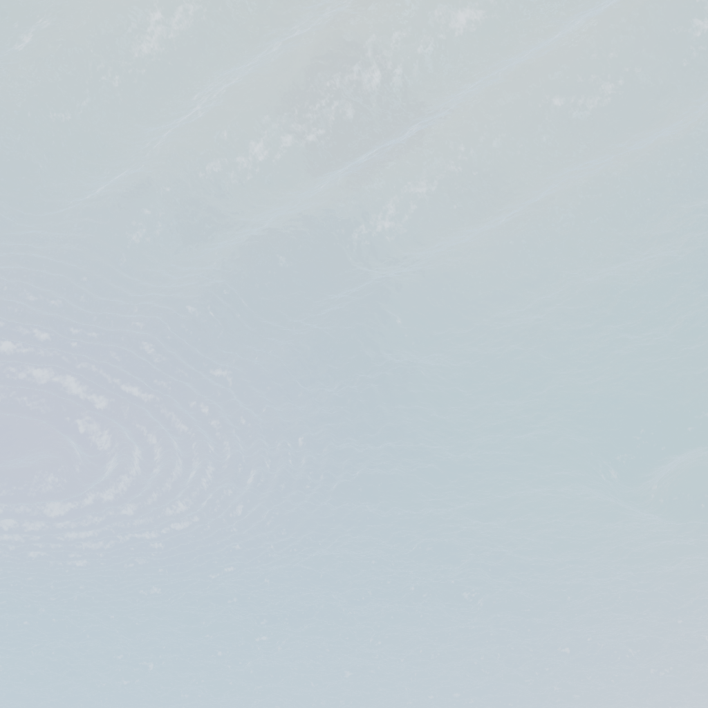
Test 24: Epicycloids
✓ Success
Problem Prompt
**Objective** – Draw the epicycloid traced by a point on a circle of radius $r=1$ rolling externally around a fixed circle of radius $R=4$.
**Parametric form**
$
x(θ)= (R+r)\cos θ - r\cos\!\bigl(\tfrac{R+r}{r}θ\bigr),\quad
y(θ)= (R+r)\sin θ - r\sin\!\bigl(\tfrac{R+r}{r}θ\bigr),
$
with θ ∈ [0,2πr/gcd(R,r)] ⇒ here θ ∈ [0,2π] (because R/r = 4 is integer).
**Styling**
* Stroke 5 px #00bbff; 2000 × 1600 px canvas.
* Show small red dot for each of the **4 cusps** (radius 8 px).
* Add faint grey dashed circle of radius R centred at origin as reference.
**Deliverable** – PNG.
Judge Scores
Rendered Output
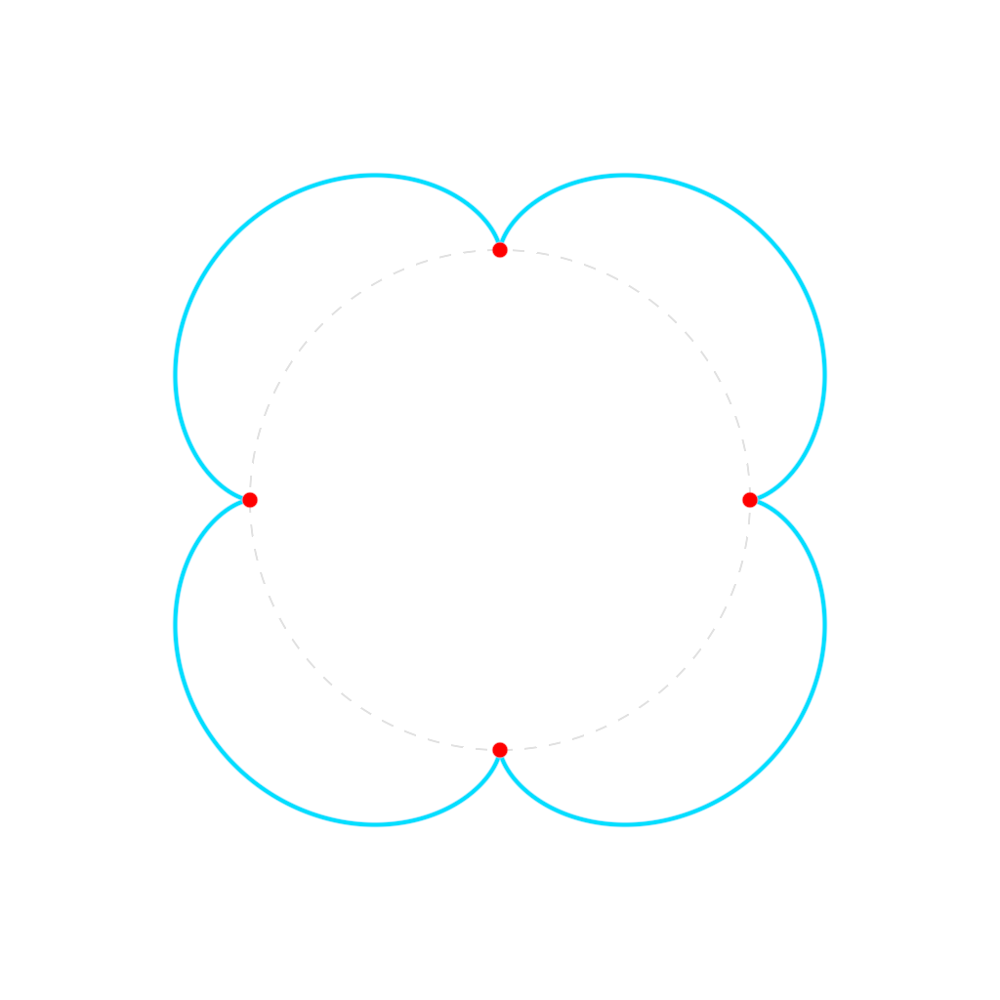
Test 25: Euler Polyhedron Formula
✓ Success
Problem Prompt
Create a single-file HTML shader that demonstrates Euler's Polyhedron Formula (V - E + F = 2) through an animated cube unfolding. The visualization should:
1. Start with a 3D wireframe cube that rotates slowly
2. Animate the cube unfolding into a flat net pattern over 5 seconds
3. Clearly annotate and count:
- Vertices (V = 8) with small colored dots
- Edges (E = 12) with distinct colored lines
- Faces (F = 6) with semi-transparent colored fills
4. Display the formula V - E + F = 2 with live updating numbers during the animation
5. Show the calculation: 8 - 12 + 6 = 2
6. Canvas size should be 2600×1600 pixels
7. Use a clean, educational style with clear labels
8. Include smooth transitions and easing for the unfolding animation
9. After unfolding, pause for 2 seconds, then reverse the animation to fold back into a cube
The implementation should be a complete, self-contained HTML file with embedded WebGL shader code. The visualization should be both mathematically instructive and visually engaging.
Judge Scores
Rendered Output
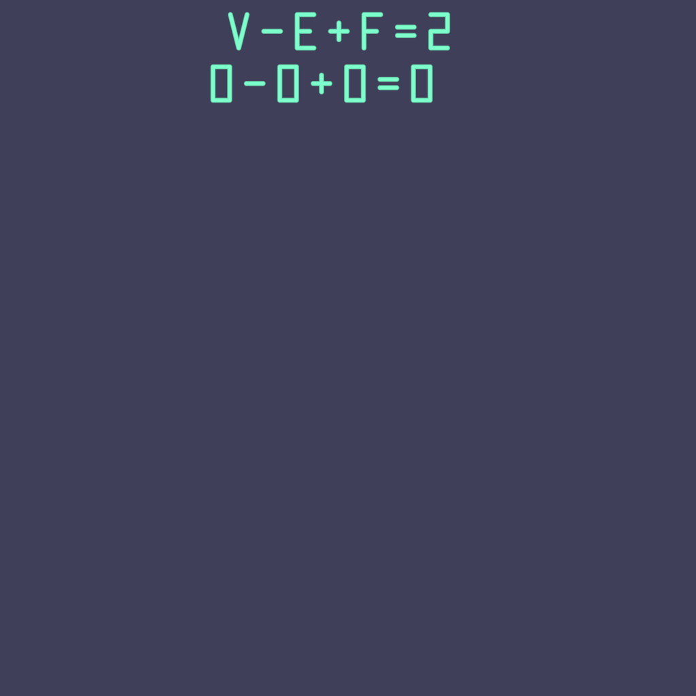
Test 26: Euler Polyhedron Platonic
✓ Success
Problem Prompt
**Objective**
Create a shader visualization demonstrating Euler's Polyhedron Formula (V - E + F = 2) through an interactive exploration of the five Platonic solids, showing Euler's 1752 discovery and its profound topological implications.
**Historical Context**
Leonhard Euler (1707-1783) discovered that for any convex polyhedron, V - E + F = 2, where V is vertices, E is edges, and F is faces. Though Descartes found a related result in 1630, Euler was first to publish and investigate this topological invariant, revolutionizing how we understand three-dimensional shapes.
**Mathematical Specification**
1. **The Five Platonic Solids Display**
Arrange in a circle, each with its Euler calculation:
- **Tetrahedron**: V=4, E=6, F=4 → 4-6+4=2
- **Cube**: V=8, E=12, F=6 → 8-12+6=2
- **Octahedron**: V=6, E=12, F=8 → 6-12+8=2
- **Dodecahedron**: V=20, E=30, F=12 → 20-30+12=2
- **Icosahedron**: V=12, E=30, F=20 → 12-30+20=2
2. **Euler's Proof Visualization**
Animate his original approach:
- Start with any Platonic solid
- Remove one face, creating a "punctured" polyhedron
- Flatten onto a plane (stereographic projection)
- Show that the planar graph still satisfies V - E + F = 1
- Account for the removed face: V - E + F = 2
3. **Topological Transformation**
Demonstrate the invariance:
- Smoothly deform a cube into a sphere
- Show vertices becoming points, edges becoming arcs
- Maintain the count during transformation
- Emphasize that V - E + F remains constant
4. **18th Century Mathematical Styling**
- Background: Aged paper with mathematical sketches (#FAF0E6)
- Copperplate engraving style for polyhedra
- Euler's handwriting style for formulas
- Include his Latin notation: "Elementa doctrinae solidorum"
- Decorative baroque mathematical borders
5. **Interactive Elements**
- Each polyhedron slowly rotates
- Vertices glow gold, edges silver, faces translucent blue
- Running count display: "V=... E=... F=... → V-E+F=2"
- Highlight elements as they're counted
- Central formula in elegant script: "V - E + F = 2"
6. **Historical Annotations**
- Euler's portrait in period oval frame
- Quote: "Noticing patterns is the essence of mathematics"
- Timeline showing: Descartes (1630) → Euler (1752) → Modern topology
- Small diagram of Königsberg bridges (Euler's other famous problem)
**Rendering Requirements**
- Each polyhedron rendered with period-accurate shading
- Soft shadows suggesting candlelight illumination
- Mathematical precision in vertex/edge/face rendering
- Smooth 15-second cycle through all demonstrations
- Resolution: 1600×1600 pixels
**Educational Goals**
- Show how Euler discovered fundamental topological truth
- Demonstrate the universality of the formula
- Connect 18th-century mathematics to modern topology
- Inspire appreciation for mathematical invariants
**Deliverable**
A shader that brings Euler's revolutionary insight to life, showing how a simple counting relationship reveals deep mathematical structure, rendered in the style of 18th-century mathematical manuscripts.
Judge Scores
Rendered Output
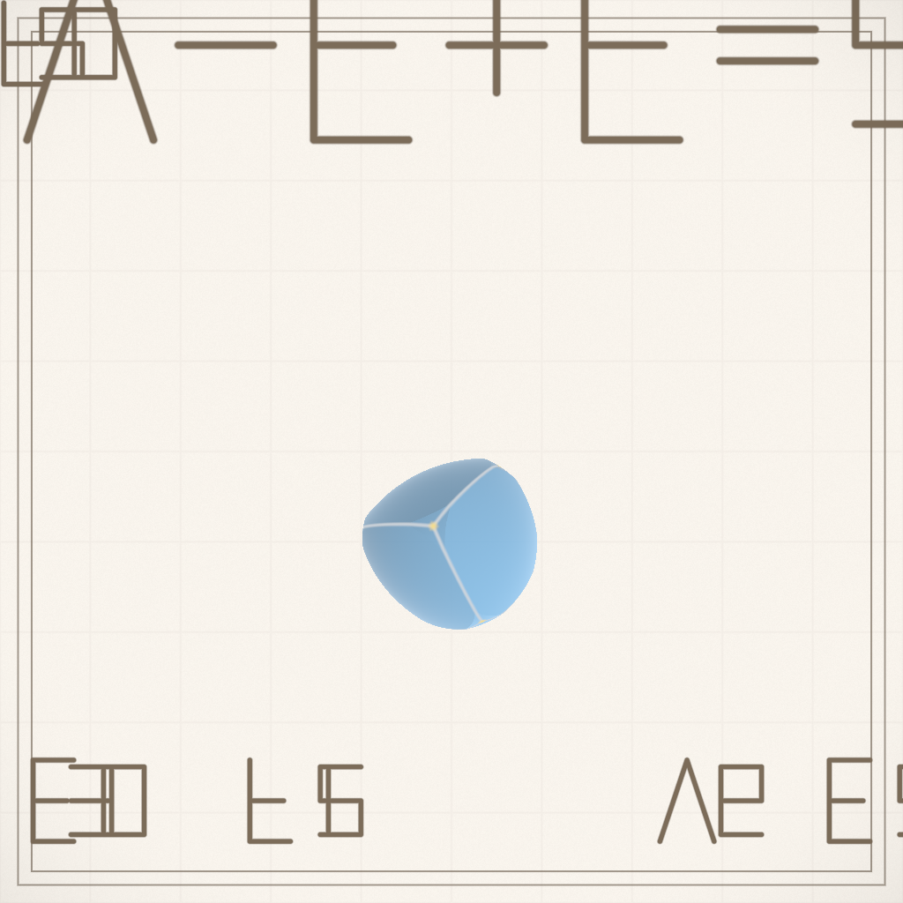
Test 27: Fermat Parabolic Spiral
✓ Success
Problem Prompt
Create a single-file HTML shader that renders Fermat's Parabolic Spiral. The visualization should:
1. Use the parametric equations for Fermat's parabolic spiral where r² = a²θ
2. Set a = 0.5 and θ ranging from 0 to 8π
3. Render the spiral with a smooth, rainbow gradient stroke that transitions through the spectrum
4. Canvas size should be 2400×2400 pixels
5. Center the spiral in the canvas
6. Use a dark background to make the rainbow colors pop
7. Ensure smooth anti-aliased rendering of the curve
8. The line width should be appropriate for the canvas size (not too thin, not too thick)
The implementation should be a complete, self-contained HTML file with embedded WebGL shader code. The spiral should be mathematically accurate and visually appealing with the rainbow gradient smoothly transitioning along the curve length.
Judge Scores
Rendered Output
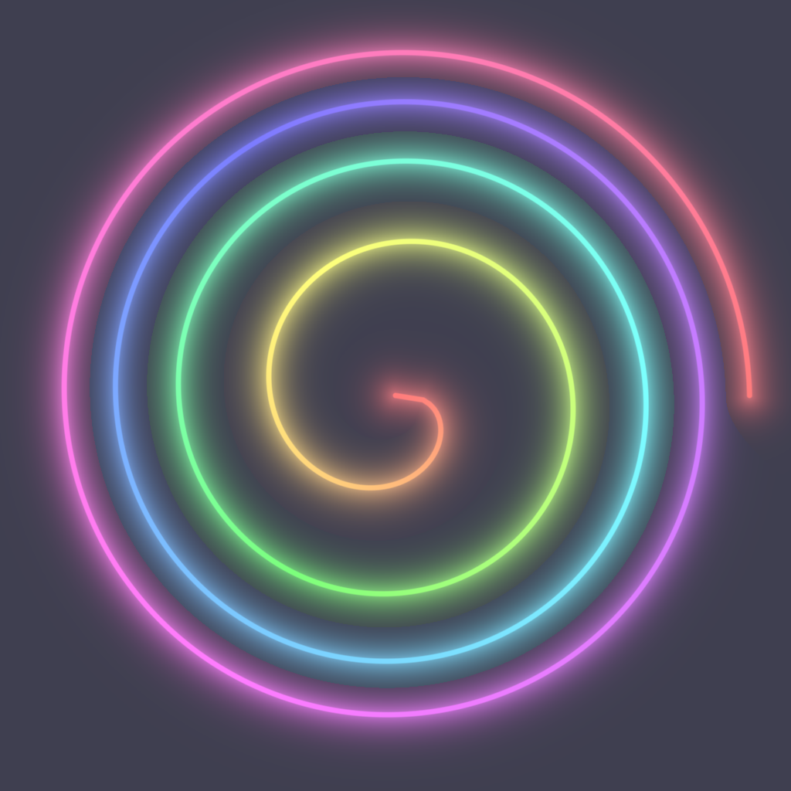
Test 28: Five Pointed Star Polygon
✓ Success
Problem Prompt
**Objective**
Draw the regular pentagram inscribed in a circle of radius 1, centred on canvas.
**Construction**
* Connect vertices in order 1‑3‑5‑2‑4‑1.
* Fill #ffcc33; 3‑px black outline.
* Canvas 1600 × 1600 px, white background.
**Deliverable** – PNG.
Judge Scores
Rendered Output
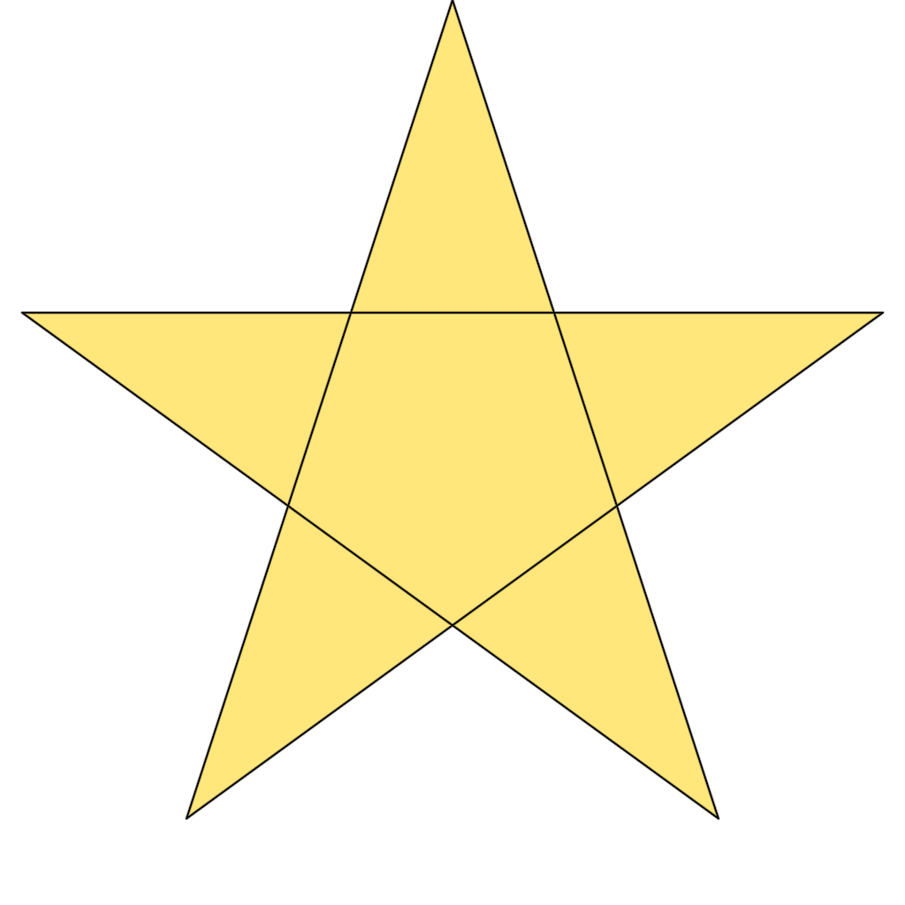
Test 29: Fourier Architectural Blueprint
✓ Success
Problem Prompt
Translate a 64×64 frequency-domain image into a bird's-eye architectural floorplan where low frequencies extrude into tall perimeter walls and high frequencies become subtle interior bumps—echoing how gross structure dominates fine details.
Algorithm:
1. Frequency grid: Indices u,v ∈ {−32...31}
2. Amplitude spectrum: A(u,v) = 1/(u²+v²+1)
3. iFFT: Compute spatial map s(x,y)=Re IFFT(A). Result is 64×64 real array.
4. Extrusion: For each cell extrude upward to height h=40·(s−s_min)/(s_max−s_min) mm
5. Geometry generation: Create 64² pillar blocks (1 mm² footprint) joined if adjacent heights differ ≤1 mm to form walls
6. Visual rendering:
- Orthographic top-down camera, z-axis up
- Walls coloured blueprint-blue (#0066CC); floor pure white
- Light ambient only (flat)
- Superpose faint (10%) grey grid at 1 mm spacing
7. Canvas 2000 × 2000 px, 80 px border
Deliverable: Outputs a single image.
Judge Scores
Rendered Output
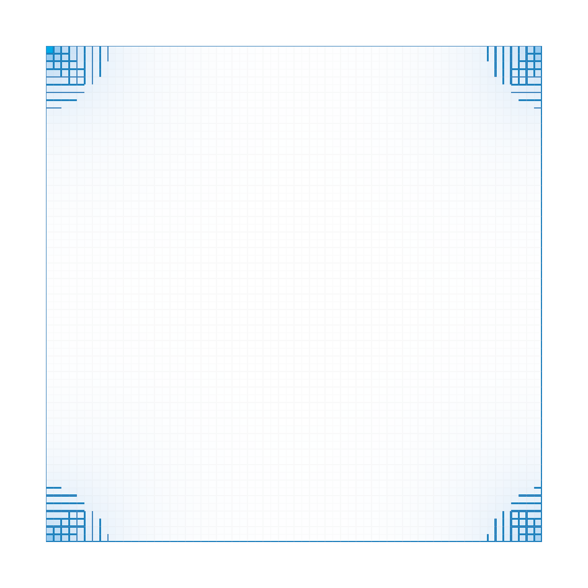
Test 30: Fourier Epicycles Drawing
✓ Success
Problem Prompt
# Fourier Epicycles Drawing
Create a WebGL animation that uses Fourier epicycles to draw complex shapes, showing how combinations of rotating circles can create any continuous path.
## Requirements:
1. Implement discrete Fourier transform to decompose a path
2. Visualize epicycles (rotating circles) with:
- At least 10 frequency components
- Circles of decreasing radius
- Connecting arms between circles
3. Draw multiple example shapes:
- Square wave approximation
- Heart shape
- Figure-8 pattern
- Custom logo or text
4. Show both the epicycles and the resulting traced path
5. Add trails showing the motion history
6. Color code different frequency components
7. Include options to show/hide:
- Individual epicycles
- Connecting arms
- Traced path
- Frequency spectrum
Judge Scores
Rendered Output
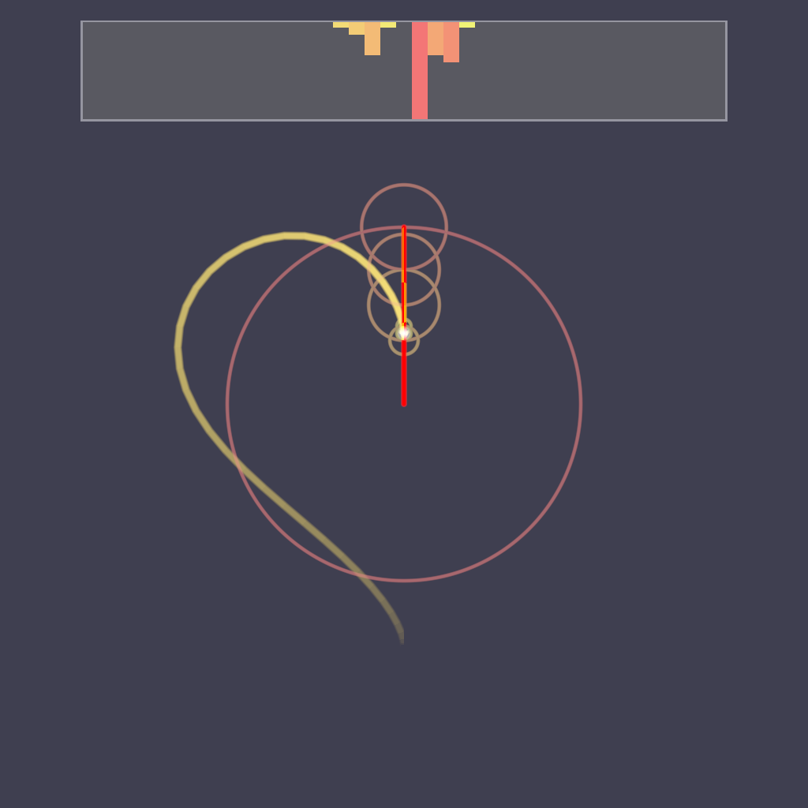
Test 31: Fractal Loxodromic Patterns
✓ Success
Problem Prompt
**Objective**
Generate **fractal loxodromic patterns** by iterating complex Möbius transformations, creating self-similar spiral structures in 3D space.
**Mathematical recipe**
1. Define loxodromic Möbius transformation: f(z) = (az+b)/(cz+d)
- Use a = 1.2·exp(iπ/6), b = 0.1, c = 0.1i, d = 1.
- Fixed points: z₁, z₂ with |f'(z₁)| > 1 (repelling), |f'(z₂)| < 1 (attracting).
2. Generate orbit for 200 initial points on circle |z| = 1.5:
- Iterate f(z) up to 50 times or until |z| > 10.
- Store full trajectory for each initial point.
3. Embed in 3D using stereographic projection:
- (x,y,z) = (2Re(z)/(1+|z|²), 2Im(z)/(1+|z|²), (|z|²-1)/(|z|²+1)).
4. Connect trajectory points to form spiral curves.
5. Add recursion: Apply transformation to smaller circles.
**Styling**
* Trajectories as glowing tubes, radius decreases with iteration.
* Color by iteration count: Deep purple (early) to bright orange (late).
* Emission intensity increases near fixed points.
* Subtle particle effects at trajectory endpoints.
* Black background with blue fog for depth.
* HDR bloom for luminous spirals.
* Camera at (2, 1.5, 2.5), looking at origin; FOV 55°.
* Resolution 2048 × 2048 px, 4× SSAA.
**Deliverable** Single PNG showing fractal spiral patterns from loxodromic iteration.
Judge Scores
Rendered Output
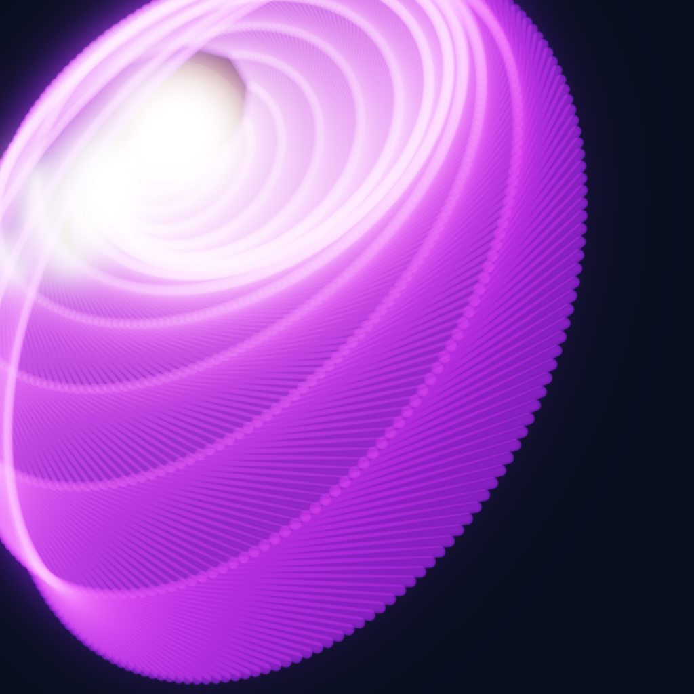
Test 32: Fractal Tree 2D
✓ Success
Problem Prompt
**Objective**
Generate a symmetric 2D fractal tree through recursive branching.
**Construction**
Start trunk from (0,0) to (0,1). Each segment length scaled 0.7, split into two at ±45° from parent. Recurse 7 levels.
**Styling**
Stroke 2 px #006600. Canvas 1600 × 1800 px white.
**Deliverable** – PNG.
Judge Scores
Rendered Output
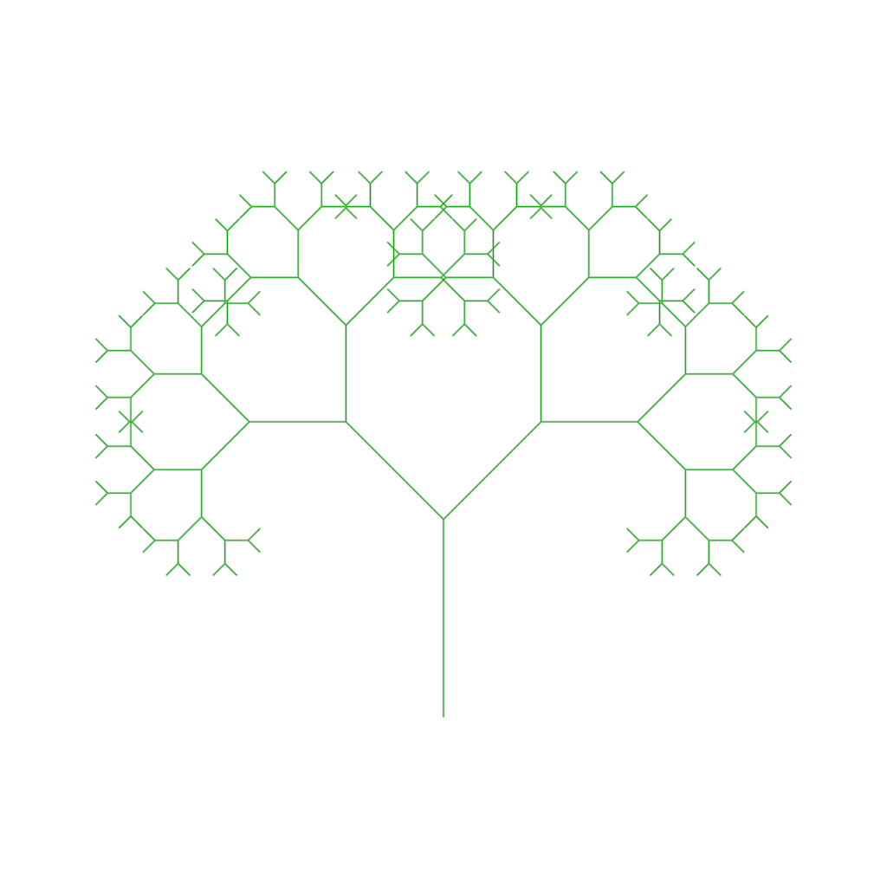
Test 33: Geometric Cube
✓ Success
Problem Prompt
Axis-aligned cube, side = 2, centred at origin.
Rendering:
- Wireframe style: edges 3 px midnight-blue (#003366); transparent faces α = 0.1 sky-blue
- Hidden edges dashed
- Camera: Elevated view from upper-right, looking down at cube corner (approx 45° elevation, 30° azimuth)
- Perspective: Orthographic projection. Canvas 1800×1800
Deliverable: Outputs a single image.
Judge Scores
Rendered Output
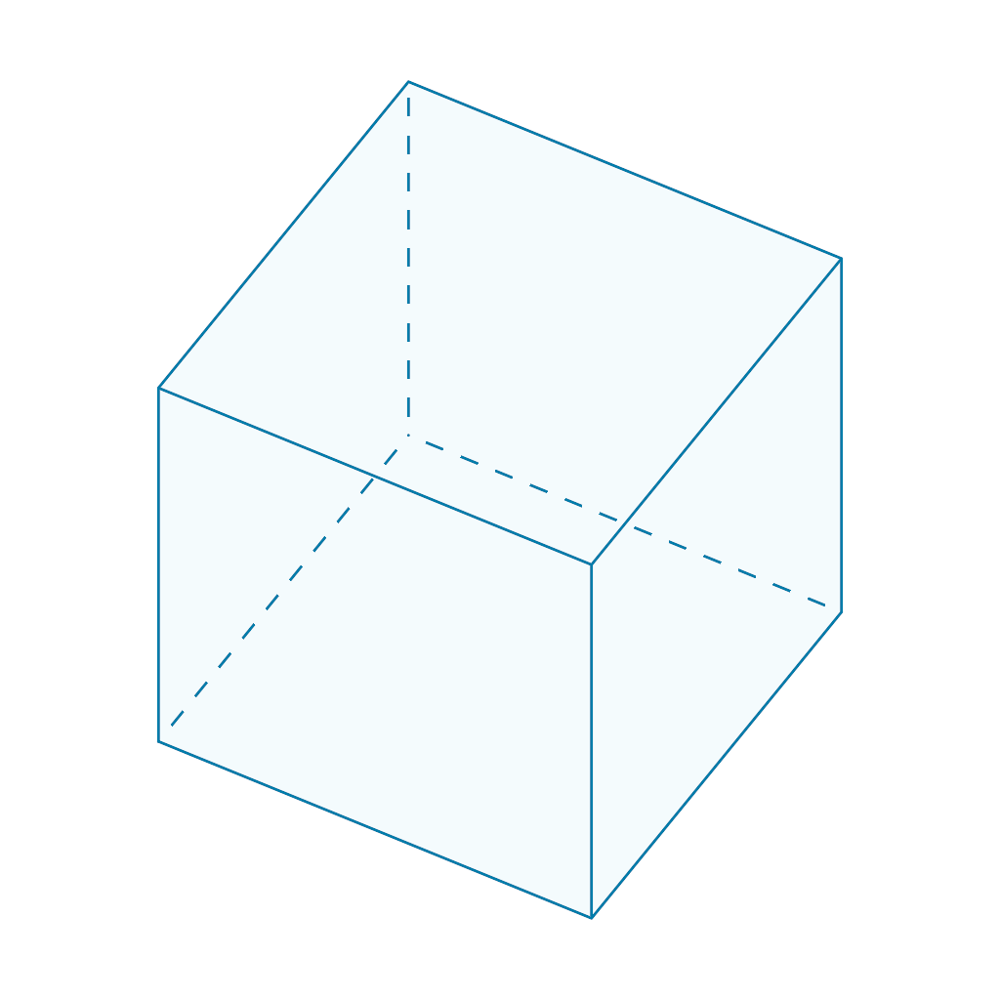
Test 34: Glass Sphere Red Core
✓ Success
Problem Prompt
**Objective**
Create a photorealistic ray-traced shader that renders a clear glass spherical shell containing a glowing red solid sphere inside. This classic ray tracing demonstration should showcase advanced optical effects including refraction, reflection, caustics, and volumetric lighting.
**Geometric Specification**
1. **Outer Glass Shell**
* **Geometry**: Hollow sphere with outer radius R₁ = 1.0 and inner radius R₂ = 0.85
* **Center**: Origin (0, 0, 0)
* **Wall thickness**: 0.15 units
* **Surface quality**: Perfectly smooth with no imperfections
2. **Inner Solid Sphere**
* **Geometry**: Solid sphere with radius r = 0.6
* **Center**: Origin (0, 0, 0) - concentric with the glass shell
* **Material**: Emissive red material with internal glow
* **Clearance**: 0.25 units between inner sphere surface and glass shell inner surface
**Material Properties**
1. **Glass Shell Material**
* **Refractive Index**: n = 1.52 (crown glass)
* **Transparency**: 95% transmission, 5% absorption
* **Color**: Clear with very slight blue tint (#fafcff)
* **Surface properties**:
- Fresnel reflections at both inner and outer surfaces
- No internal scattering (perfectly clear)
- Smooth surface (mirror-like when viewed at grazing angles)
2. **Inner Sphere Material**
* **Base Color**: Deep red (#cc0000)
* **Emission**: Bright red glow (#ff3333) with intensity 2.0
* **Surface**: Slightly rough (roughness = 0.1) to show surface detail
* **Subsurface scattering**: Subtle red subsurface glow to enhance volume appearance
**Lighting and Environment**
1. **Primary Lighting**
* **Key Light**: Strong directional light from upper-left (45° elevation, 315° azimuth)
* **Intensity**: 3.0 units, color temperature 5500K (daylight)
* **Shadows**: Sharp shadows enabled to show glass refraction effects
2. **Environment**
* **Background**: Neutral gradient from light gray (#e0e0e0) at horizon to white (#ffffff) at zenith
* **Ground Plane**: Subtle reflective surface (10% reflectivity) positioned below the spheres
* **Ambient Light**: Low-level ambient illumination (0.1 intensity) to prevent pure black shadows
**Ray Tracing Requirements**
1. **Optical Accuracy**
* **Refraction**: Proper Snell's law implementation at glass interfaces
* **Multiple refractions**: Handle ray paths through both glass surfaces
* **Total internal reflection**: Correct behavior at critical angles
* **Fresnel effects**: Accurate reflection/transmission ratios based on viewing angle
2. **Advanced Effects**
* **Caustics**: Light focusing effects from glass refraction (especially from inner sphere glow)
* **Multiple reflections**: Handle inter-reflections between glass surfaces
* **Chromatic dispersion**: Subtle spectral separation in glass refraction
* **Volumetric lighting**: Visible light rays/beams where appropriate
3. **Technical Parameters**
* **Ray depth**: Minimum 8 bounces to capture multiple glass interactions
* **Samples**: High sampling rate for smooth glass surfaces and soft shadows
* **Resolution**: 1600×1600 pixels minimum with anti-aliasing
**Camera and Composition**
* **Position**: Camera positioned at (2, 1, 2) looking toward origin
* **Field of view**: 45° to provide natural perspective
* **Focus**: Sharp focus on the spheres with slight depth of field on background
* **Exposure**: Balanced to show both glass details and inner sphere glow without clipping
**Quality Standards**
* **Glass clarity**: No noise or artifacts in transparent surfaces
* **Reflection accuracy**: Sharp, undistorted reflections of environment and inner sphere
* **Glow rendering**: Smooth, realistic volumetric glow from inner sphere
* **Caustic detail**: Visible light concentration patterns on ground plane and nearby surfaces
* **Color accuracy**: Faithful reproduction of materials without oversaturation
**Deliverable**
A single high-resolution PNG image demonstrating advanced ray tracing techniques with photorealistic glass rendering, accurate optical physics, and beautiful caustic light effects.
Judge Scores
Rendered Output
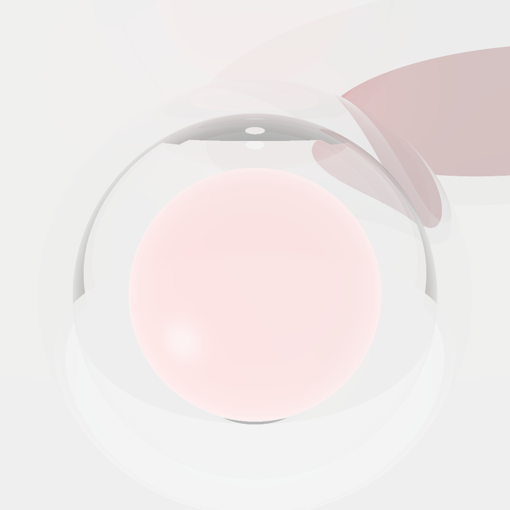
Test 35: Group Theory Kaleidoscope
✓ Success
Problem Prompt
Forge a hypnotic hyperbolic kaleidoscope by reflecting a single (30°,60°,90°) triangle under the (2,3,∞) triangle group. The first-generation reflections should appear vivid and low-depth; deeper reflections progressively darken, giving a sense of plunging into hyperbolic infinity.
Mathematics & tiling algorithm:
1. Fundamental triangle: Vertices (in Poincaré disk) at
- v₁ = (0, 0)
- v₂ = (0.6, 0)
- v₃ = (0.2, 0.55)
(Angles 90°,60°,30° validated via hyperbolic law of cosines)
2. Reflection group: Generate up to depth=4 using mirrors across triangle edges. Expect 1 + 3 + 6 + 12 + 24 = 46 triangles.
3. Colour coding: Assign depth d triangle luminosity L = 0.9·0.7^d, hue = 200°+10d (Shifts toward cyan)
4. Edge rendering: Edges are circle arcs orthogonal to disk boundary; stroke 1.5 px #222222
5. Canvas 2400 × 2400; disk radius fits 95% width. Background white outside disk after crop-mask.
Deliverable: Outputs a single image.
Judge Scores
Rendered Output
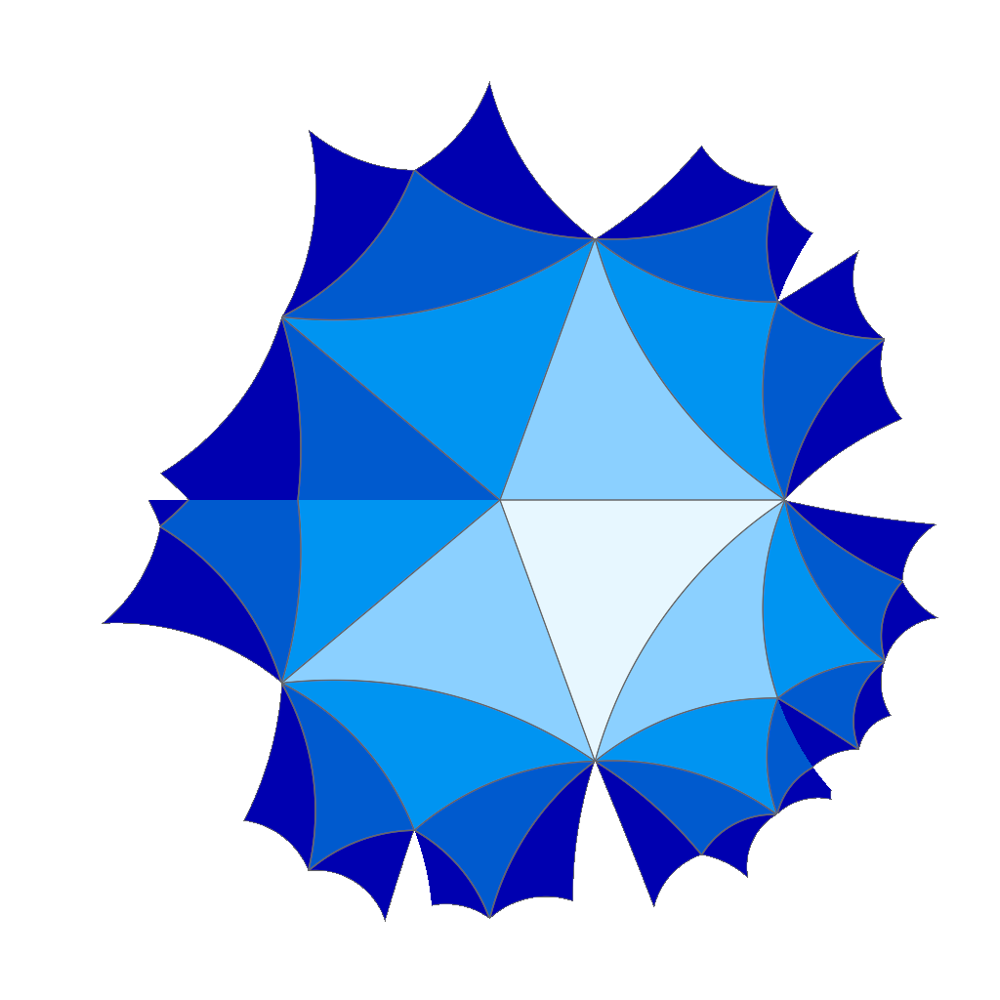
Test 36: Gyroscopic Nested Rings
✓ Success
Problem Prompt
**Objective**
Create three concentric rings representing a gyroscopic system with orthogonal rotation axes.
**Construction**
Three concentric rings radii 1, 1.5, 2. Each rotated 30° about mutually orthogonal x, y, z axes respectively. Show instantaneous orientation.
**Styling**
Colour rings #f66, #6f6, #66f. Camera (4,3,3). 2200×1600 PNG.
**Deliverable** PNG.
Judge Scores
Rendered Output
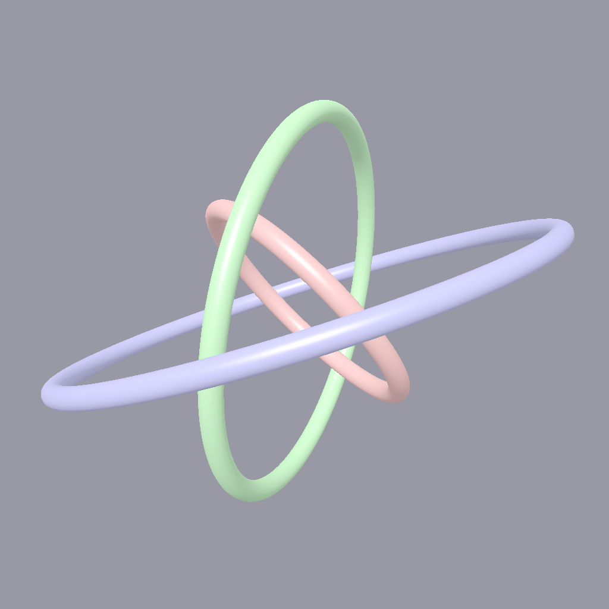
Test 37: Helical Twist Deformation
✓ Success
Problem Prompt
**Objective**
Render a cube undergoing **helical twist deformation** where the amount of rotation varies linearly along the vertical axis, creating a DNA-like twisted structure.
**Mathematical recipe**
1. Start with a unit cube centered at origin with vertices at (±1, ±1, ±1).
2. Apply helical twist transformation:
- For point (x, y, z), twist angle θ = k·z where k = 2π (full rotation over height).
- Rotated position: x' = x·cos(θ) - y·sin(θ), y' = x·sin(θ) + y·cos(θ), z' = z.
3. Use signed distance field for the twisted cube:
- Transform ray point inversely through the twist before evaluating cube SDF.
- Cube SDF: max(|x|, |y|, |z|) - 1.0.
4. Add edge beveling (radius 0.05) for visual clarity.
**Styling**
* Material: Metallic surface with Fresnel reflections.
* Color gradient based on height: deep blue (bottom) to golden yellow (top).
* Three-point lighting: key light from (2, 3, 1), fill from (-1, 1, 2), rim from (0, -2, -1).
* Soft shadows using 32 shadow rays per point.
* Camera at (3, 2, 4), looking at origin; FOV 35°.
* Dark grey background (0.1, 0.1, 0.12).
* Resolution 2048 × 2048 px, 4× SSAA.
**Deliverable** Single PNG showing the twisted cube with clear helical deformation.
Judge Scores
Rendered Output
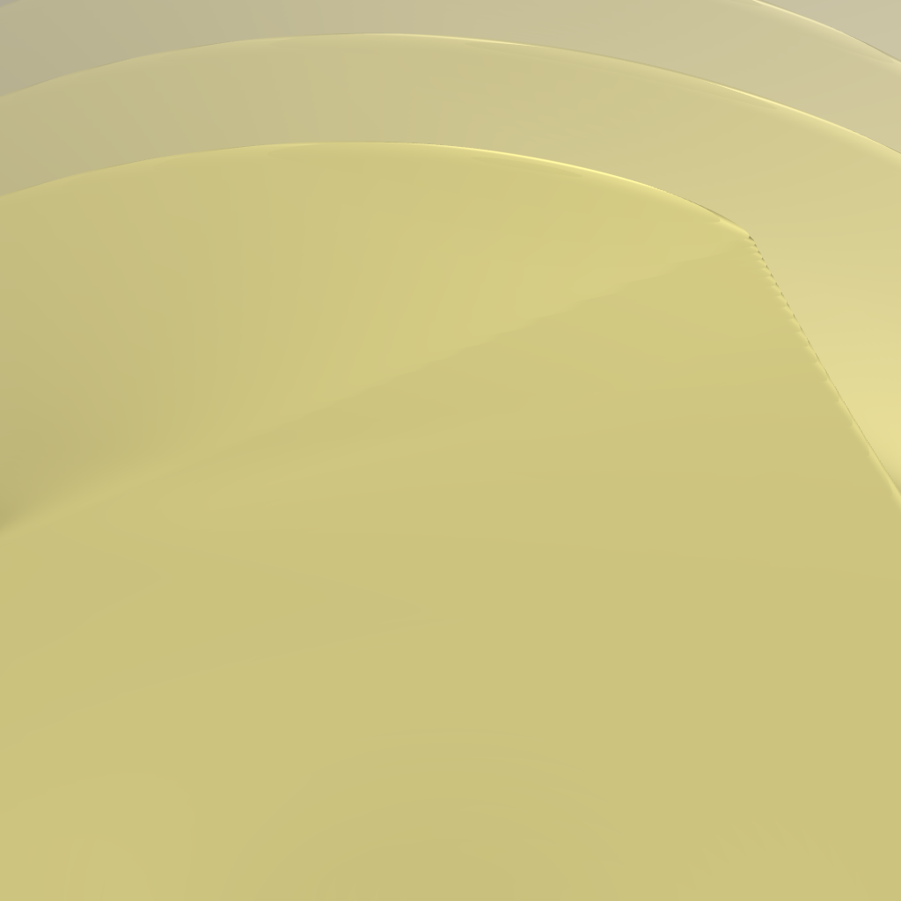
Test 38: Helical Twisted Cube Advanced
✓ Success
Problem Prompt
**Objective**
Create a cube with edges following true helical paths during a 90° twist transformation.
**Geometry**
Same as previous twisted cube but edges must trace true helices: parametric equation for vertical edge
$x=1,\;z=1,\;y∈[-1,1]$ → after twist:
$\theta(y)=\frac{\pi}{2}\frac{y+1}{2},\;
x'(y)=\cos\theta,\;z'(y)=\sin\theta.$
**Styling**
Render orange diffuse (#ffaa33) with black wire overlay (1 px). 2400×1600 PNG.
**Deliverable** PNG.
Judge Scores
Rendered Output
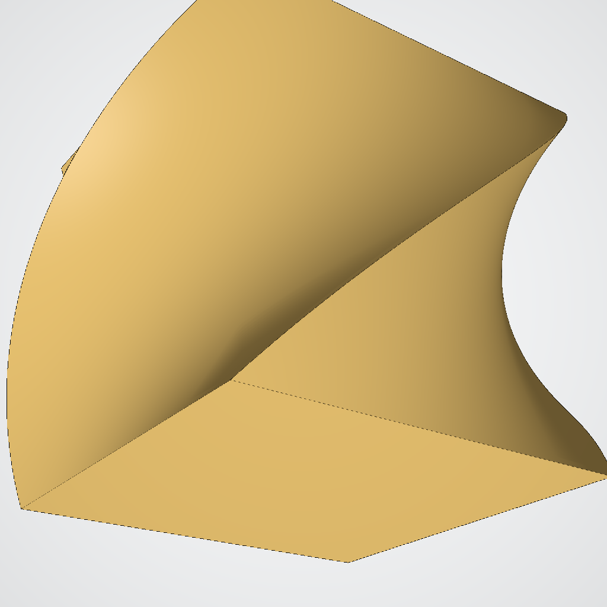
Test 39: Holographic Interference
✓ Success
Problem Prompt
**Objective**
Render the RGB interference pattern produced when two coherent plane waves of equal intensity intersect in free space at a $20^{\circ}$ angle.
**Physical model**
* ***Wave 1:*** $\mathbf k_{1}=(0,\,0,\,2\pi/\lambda)$.
* ***Wave 2:*** $\mathbf k_{2}=(\sin10^{\circ},\,0,\,\cos10^{\circ})\,2\pi/\lambda$.
* Wavelengths: $\lambda_{R}=650\,\text{nm},\;\lambda_{G}=510\,\text{nm},\;\lambda_{B}=460\,\text{nm}$.
* Electric field at screen point $\mathbf r=(x,y,0)$: $E(\mathbf r)=\sum_{c\in\{R,G,B\}}\bigl[\exp(i\mathbf k_{1}\!\cdot\!\mathbf r)+\exp(i\mathbf k_{2}\!\cdot\!\mathbf r)\bigr]_c$.
* Intensity $I_c(\mathbf r)=|E_c|^{2}$.
**Image plane**
* Domain $x,y\in[-5\lambda_G,+5\lambda_G]$.
* Sample $4096\times4096$ grid; periodic boundary conditions not required.
**Rendering**
* Normalise each channel so its maximum intensity maps to value 1, then convert to sRGB.
* Output 3000 × 3000 px 16‑bit PNG. Black background outside domain. No labels.
**Deliverable** One PNG file.
Judge Scores
Rendered Output
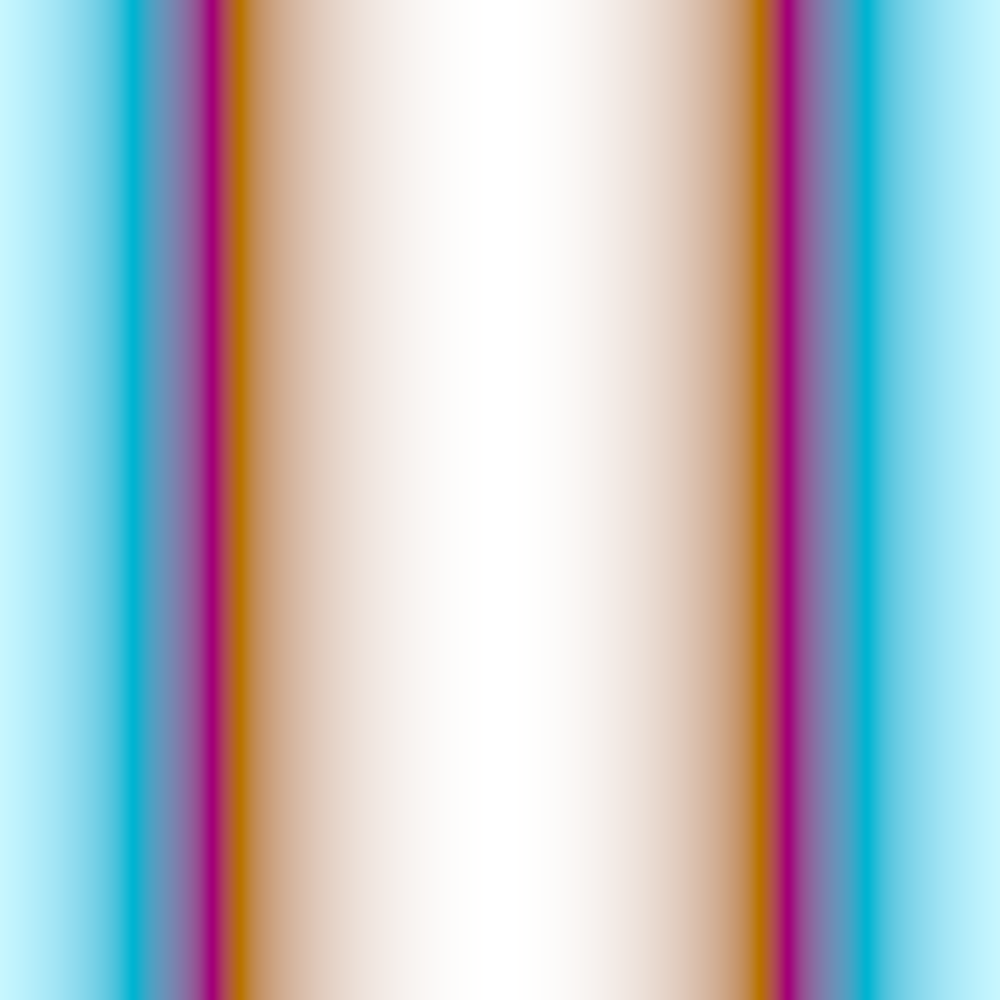
Test 40: Hopf Fibration Base Loops
✓ Success
Problem Prompt
**Objective**
Produce a single high‑resolution image that visualises the pre‑images (fibres) of three prescribed closed curves on the 2‑sphere under the classical Hopf fibration $p:S^{3}\to S^{2}$. No copy of the target picture is provided – rely exclusively on the mathematical specification below.
**Mathematical specification**
1. **Spaces and map**
* Identify $\mathbb R^{4}\cong\mathbb C^{2}$ by
$(x_{1},x_{2},x_{3},x_{4})\longleftrightarrow(z_{0},z_{1})=(x_{1}+i\,x_{2},\;x_{3}+i\,x_{4})$.
* The *total space* is the unit $3$-sphere
$$
S^{3}=\left\{(z_{0},z_{1})\in\mathbb C^{2}\;|\;|z_{0}|^{2}+|z_{1}|^{2}=1\right\}.
$$
* The *base space* is the unit $2$-sphere embedded in $\mathbb C\times\mathbb R\simeq\mathbb R^{3}$:
$$
S^{2}=\left\{(z,x)\;|\;z\in\mathbb C,\;x\in\mathbb R,\;|z|^{2}+x^{2}=1\right\}.
$$
* Hopf map
$$
p(z_{0},z_{1})=\bigl(2\,z_{0}\,\overline{z}_{1},\;|z_{0}|^{2}-|z_{1}|^{2}\bigr).
$$
2. **Chosen base loops on $S^{2}$**
Work in spherical coordinates $(\theta,\varphi)$ with the usual identification
$ (x,y,z)=\bigl(\sin\theta\cos\varphi,\,\sin\theta\sin\varphi,\,\cos\theta\bigr)$.
* **Loop A (upper)** latitude $+\;60^{\circ}$: $\theta=\dfrac{\pi}{3},\;\varphi\in[0,2\pi)$
* **Loop B (equatorial)** latitude $0^{\circ}$: $\theta=\dfrac{\pi}{2},\;\varphi\in[0,2\pi)$
* **Loop C (lower)** latitude $-60^{\circ}$: $\theta=\dfrac{2\pi}{3},\;\varphi\in[0,2\pi)$
3. **Geometry to render**
For each base loop $\Gamma_{k}$ ($k\in\{A,B,C\}$) render the torus
$$
T_{k}=p^{-1}(\Gamma_{k})\subset S^{3}.
$$
Each point of $T_{k}$ is a *circle fibre*; the union of those fibres over the loop is a flat torus embedded in $S^{3}$.
4. **Projection to $\mathbb R^{3}$**
Use stereographic projection $\sigma:S^{3}\setminus\{(0,0,0,1)\}\to\mathbb R^{3}$ from the north‑pole $(0,0,0,1)$. Compose $T_{k}$ with $\sigma$ to obtain three linked tori in $\mathbb R^{3}$.
5. **Rendering style**
* Draw every fibre as a smooth tube of constant radius (≈ 1 % of the circumscribed sphere diameter) and at least 500 points per fibre so that the surface looks continuous.
* Colour **continuously** with the HSV hue wheel according to the polar angle $\varphi$ on the base loop: $\text{Hue}= \varphi/(2\pi)$. Apply identical colouring to fibre points originating from the same base point.
* Place a small translucent grey sphere at the lower‑right of the frame representing the base $S^{2}$; plot the three coloured base loops on it and include three thin axial rods (±x,±y,±z) for orientation.
* Use a white background, soft Phong shading, no outlines. Image should be at least 1600 × 1600 px, antialiased.
**Deliverable**
A single RGB image (PNG preferred) satisfying the above geometric and stylistic constraints.
Judge Scores
Rendered Output
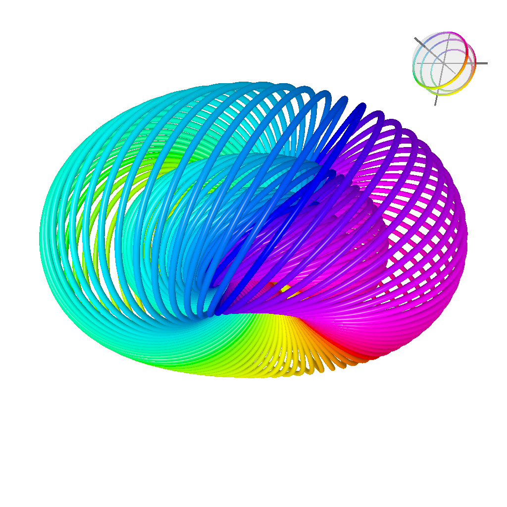
Test 41: Hyper Menger Cube 3Sphere
✓ Success
Problem Prompt
**Objective**
Generate a shader that renders the intersection of a 4D Hyper Menger Cube with the unit 3-sphere, projected into 3D space. This visualization should demonstrate both the 4D fractal geometry and the spherical intersection, creating a unique cross-section view of the 4D fractal structure.
**Mathematical Specification**
1. **4D Hyper Menger Cube Construction**
The 4D Menger cube (Menger tesseract) is constructed by extending the 3D Menger cube construction to 4 dimensions:
* Start with a unit tesseract (4D hypercube) in [-1,1]⁴
* At each iteration, divide each face into a 3×3 grid
* Remove the center of each 3D face and the 4D "cross" passing through all centers
* For a point (x,y,z,w), apply the Menger construction rules to all 4 coordinates
* A point is kept if at most 2 of its coordinates have (coordinate mod 3ⁿ) = 1 at scale n
2. **3-Sphere Intersection**
The unit 3-sphere in 4D is defined as:
$$S^3 = \{(x,y,z,w) \in \mathbb{R}^4 : x^2 + y^2 + z^2 + w^2 = 1\}$$
The intersection is:
$$I = \{p \in S^3 : p \text{ belongs to the 4D Menger cube}\}$$
3. **Stereographic Projection to 3D**
Project the intersection from 4D to 3D using stereographic projection from the point (0,0,0,1):
$$\pi(x,y,z,w) = \frac{1}{1-w}(x,y,z) \text{ for } w \neq 1$$
Handle the singularity at w=1 by using a small offset or alternative projection method.
4. **Geometric Properties**
* **Iterations**: Implement at least 3 complete iterations of the 4D Menger construction
* **Cross-sections**: The result should show characteristic Menger cube cross-sections at different "depths" (w-values)
* **Connectivity**: Maintain the connected fractal structure throughout the intersection
5. **Rendering Specifications**
* **Resolution**: Minimum 1600×1600 pixels with anti-aliasing
* **Perspective**: Use a 3D camera positioned to reveal the complex structure
* **Rotation**: Apply gentle rotation to show multiple aspects of the intersection
**Material and Coloring**:
* Color based on the w-coordinate before projection:
- w ≈ 1.0 (north pole): Bright yellow (#ffeb3b)
- w ≈ 0.0 (equator): Deep orange (#ff5722)
- w ≈ -1.0 (south pole): Dark purple (#4a148c)
* Use smooth interpolation between these colors
* Apply a glossy, semi-transparent material (α = 0.8) to show internal structure
6. **Lighting and Environment**
* **Lighting**: Multiple light sources to illuminate the complex geometry:
- Primary light from upper-right
- Secondary light from lower-left
- Ambient lighting to prevent deep shadows
* **Background**: Deep space gradient from dark blue (#0d47a1) to black (#000000)
* **Effects**: Subtle subsurface scattering to enhance the semi-transparent appearance
7. **Mathematical Accuracy Requirements**
* Ensure proper 4D distance calculations for the Menger construction
* Correctly implement the sphere constraint x²+y²+z²+w²=1
* Accurate stereographic projection maintaining topological properties
* No geometric artifacts from improper 4D to 3D conversion
**Deliverable**
A single high-resolution PNG image showing the 3D projection of the 4D Menger cube intersected with the 3-sphere, with proper coloring, transparency, and lighting to reveal the intricate fractal cross-sectional structure.
Judge Scores
Rendered Output
Test 42: Hyperbolic Heat Kernel
✓ Success
Problem Prompt
Imagine a thermogram on the Poincaré disk that visualises how heat pulses spread in negatively curved space. Colours must transition from white-hot at the centre to icy indigo at the frontier, emphasising the exponentially accelerated diffusion unique to hyperbolic geometry.
Mathematics:
- Heat kernel in 2-D hyperbolic space (curvature −1) for time t=0.2:
K(r,t) = (1/√(4πt)) * exp(-t) * exp(-r²/(4t))
where r is the hyperbolic distance from origin (on Poincaré disk r = 2 artanh ρ with ρ=|z|)
- Compute K on 2048×2048 disk-centric grid
Colour & geometry:
- Map K linearly to "plasma" palette (Matplotlib); K_max≈1.2400 at centre
- Cap outer 10 px ring to pure black to frame disk
- Overlay geodesic circle of hyperbolic radius 1.5 (Euclidean radius ρ_c=tanh(1.5/2)=0.905); draw as 3 px gold (#ffcc33) dashed line (dash 12 px)
Annotations:
- Add a minuscule legend at bottom-left: colour bar 200 × 20 px, ticks at K=1.24, 0.5, 0.1
File: PNG-24, sRGB, 2200 × 2200 px
Deliverable: Outputs a single image.
Judge Scores
Rendered Output
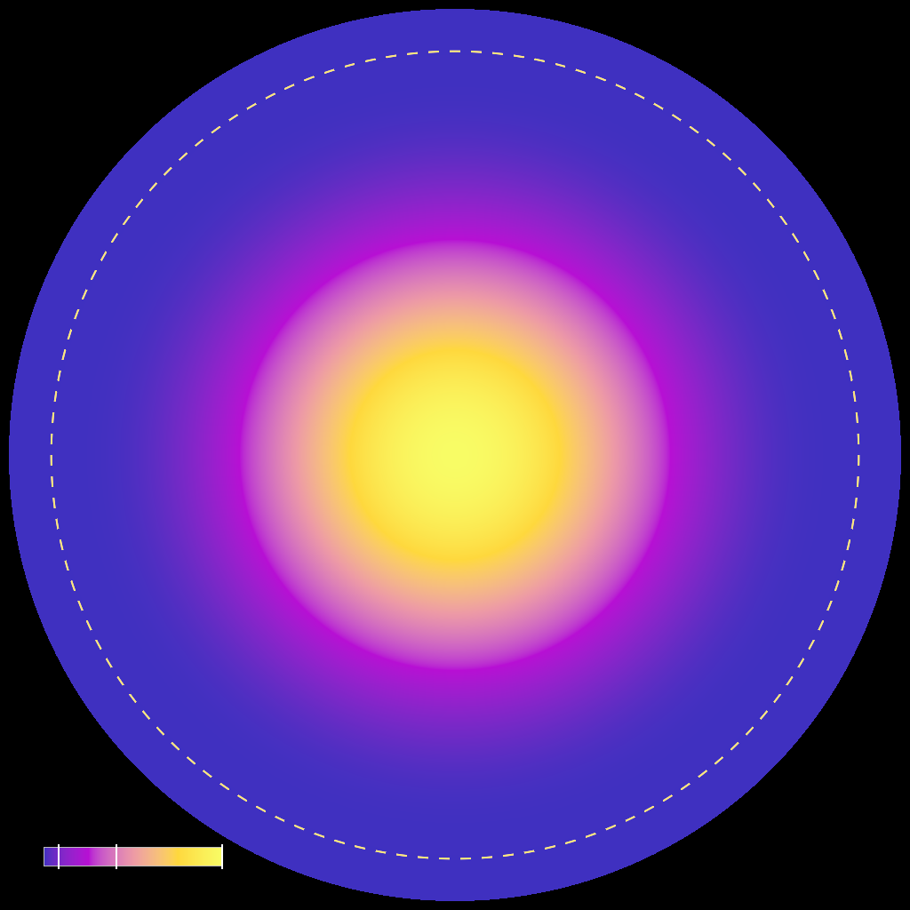
Test 43: Klein Bottle
✓ Success
Problem Prompt
**Objective**
Render a Klein bottle using the classical parametrization to visualize this non-orientable surface.
**Parametric equations**
Use classical parametrisation (radius 2):
$
\begin{aligned}
x &=\bigl(R+\cos u/2\sin v - \sin u/2\sin 2v\bigr)\cos u,\\
y &=\bigl(R+\cos u/2\sin v - \sin u/2\sin 2v\bigr)\sin u,\\
z &=\sin u/2\sin v + \cos u/2\sin 2v,
\end{aligned}
$
with $u∈[0,2π],\;v∈[0,2π],\;R=2$. Grid 600×120.
**Styling**
Back‑face culling **disabled** (visualise 1‑sidedness). Colour by Gaussian curvature (blue → 0, red → +). Phong light (4,5,8). Camera (6,3,1). BG #eefeff. 2600×1600 PNG.
**Deliverable** PNG.
Judge Scores
Rendered Output
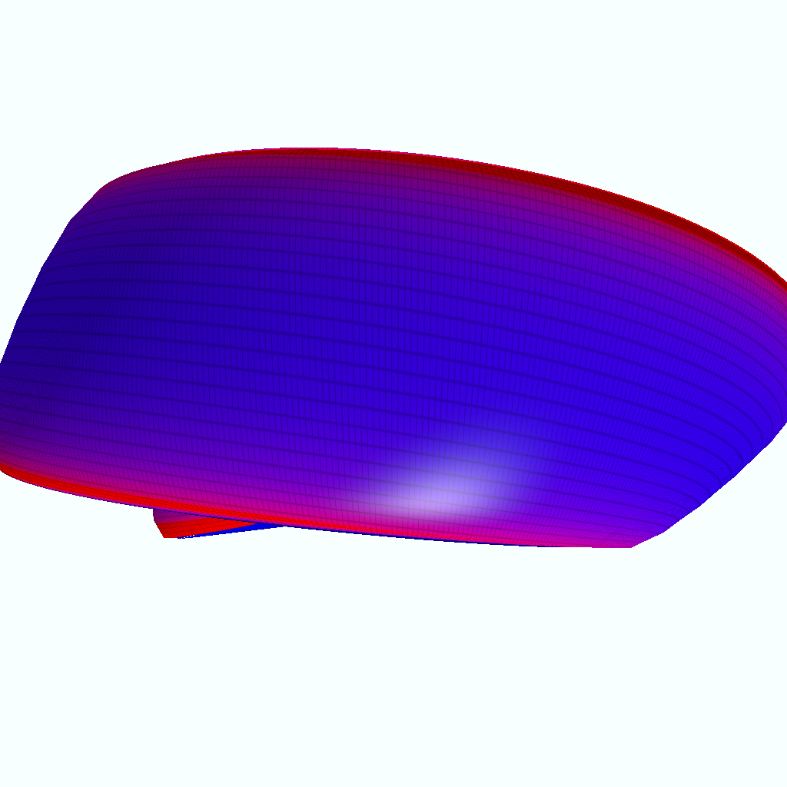
Test 44: Lissajous Curve Garden
✓ Success
Problem Prompt
# Lissajous Curve Garden
Create a dynamic WebGL scene featuring multiple Lissajous curves with different frequency ratios and phase shifts, arranged in a garden-like display.
## Requirements:
1. Display at least 5 different Lissajous curves simultaneously
2. Each curve should have:
- Different frequency ratios (e.g., 3:2, 4:3, 5:4)
- Different phase shifts
- Unique colors that smoothly blend along the curve
3. Animate the curves by slowly varying their phase shifts
4. Arrange curves in 3D space with proper depth perspective
5. Add subtle rotation to the entire scene for better viewing
6. Include smooth anti-aliasing for clean curve rendering
7. Implement a gradient background that complements the curves
Judge Scores
Rendered Output
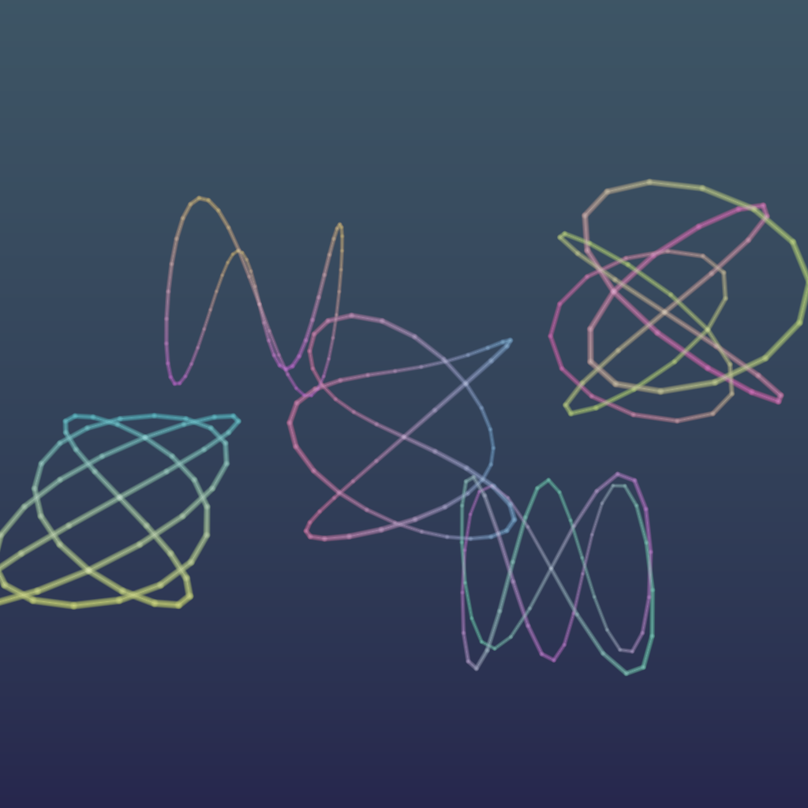
Test 45: Logarithmic Spiral Motion
✓ Success
Problem Prompt
**Objective**
Create a visualization of **logarithmic spiral motion** in 3D space, showing particles following exponential spiral trajectories with simultaneous rotation and scaling.
**Mathematical recipe**
1. Generate 8 particle streams, each starting at different angles.
2. Logarithmic spiral in cylindrical coordinates:
- r(t) = r₀ · exp(k·t), where k = 0.15 (growth rate).
- θ(t) = θ₀ + ω·t, where ω = π/2 (angular velocity).
- z(t) = h₀ + v·t, where v = 0.3 (vertical velocity).
- t ∈ [0, 20] for full spiral development.
3. Each stream consists of 100 particles with time offset.
4. Particle size scales with exp(-k·t/2) (shrinks as it spirals out).
5. Add motion blur trails showing trajectory history.
**Styling**
* Particles: Glowing spheres with HDR emission.
* Color by spiral arm: Full HSV spectrum distributed evenly.
* Intensity fades exponentially with distance from center.
* Motion trails: 20% opacity, length proportional to velocity.
* Central attractor: Bright white emissive sphere (radius 0.1).
* Dark background with radial gradient.
* Bloom and glow post-processing.
* Camera at (3, 4, 2), looking at origin; FOV 50°.
* Resolution 2048 × 2048 px, 4× SSAA.
**Deliverable** Single PNG capturing the dynamic logarithmic spiral motion pattern.
Judge Scores
Rendered Output
Test 46: Lorenz Attractor Poincare
✓ Success
Problem Prompt
**Objective**
Integrate the Lorenz system ($\sigma=10,\;\rho=28,\;\beta=8/3$) and visualise both the 3‑D trajectory and its Poincaré section at plane $z=\rho-1=27$.
**Numerics**
* Integrator: 4th‑order RK, $\Delta t=0.005$, total time 100 s.
* Initial point (1,1,1).
* Record intersections where trajectory crosses plane with $\dot z>0$; interpolate linearly for exact hit.
**Rendering**
* 3‑D curve: colour by time (HSV hue 0 → 360° over integration). Thickness 1 % of attractor diameter.
* Poincaré points: 4‑px circles on the plane, coloured white.
* Plane semi‑transparent (#444444, α 0.15).
* Camera (40°,30°) spherical at radius 50; FOV 60°. White background.
* 2000 × 1600 px PNG, gamma 2.2.
**Deliverable** PNG.
Judge Scores
Rendered Output
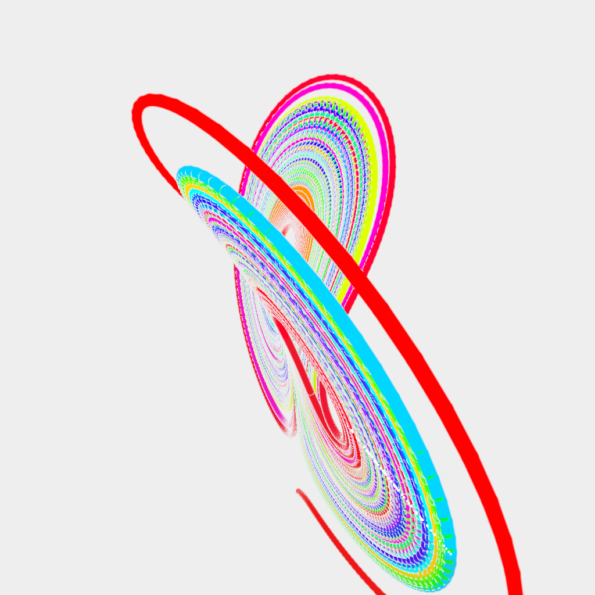
Test 47: Loxodromic Sphere Spirals
✓ Success
Problem Prompt
**Objective**
Render **loxodromic spirals** on a sphere surface—curves that maintain constant angle with meridians, creating mesmerizing spiral patterns from pole to pole.
**Mathematical recipe**
1. Generate 12 loxodromic curves on unit sphere, each with different starting longitude.
2. Loxodrome parameterization (angle α = 35° with meridians):
- θ(t) = 2·arctan(exp(t·cot(α))) - π/2 (latitude)
- φ(t) = φ₀ + t (longitude)
- t ∈ [-8, 8] to cover multiple spiral turns.
3. Convert to Cartesian: x = cos(θ)cos(φ), y = cos(θ)sin(φ), z = sin(θ).
4. Render each spiral as a tube (radius 0.02) with emissive material.
5. Add transparent sphere (radius 0.98) with subtle grid lines.
**Styling**
* Spiral colors: HSV gradient based on longitude φ₀, full spectrum.
* Emissive intensity varies with latitude: brightest at equator.
* Sphere: glass-like material, IOR 1.1, transparency 0.85.
* Dark background with subtle star field.
* Bloom post-processing for glowing spirals.
* Camera at (2.5, 1.5, 2), looking at origin; FOV 45°.
* Resolution 2048 × 2048 px, 4× SSAA.
**Deliverable** Single PNG showing luminous loxodromic spirals wrapping the sphere.
Judge Scores
Rendered Output
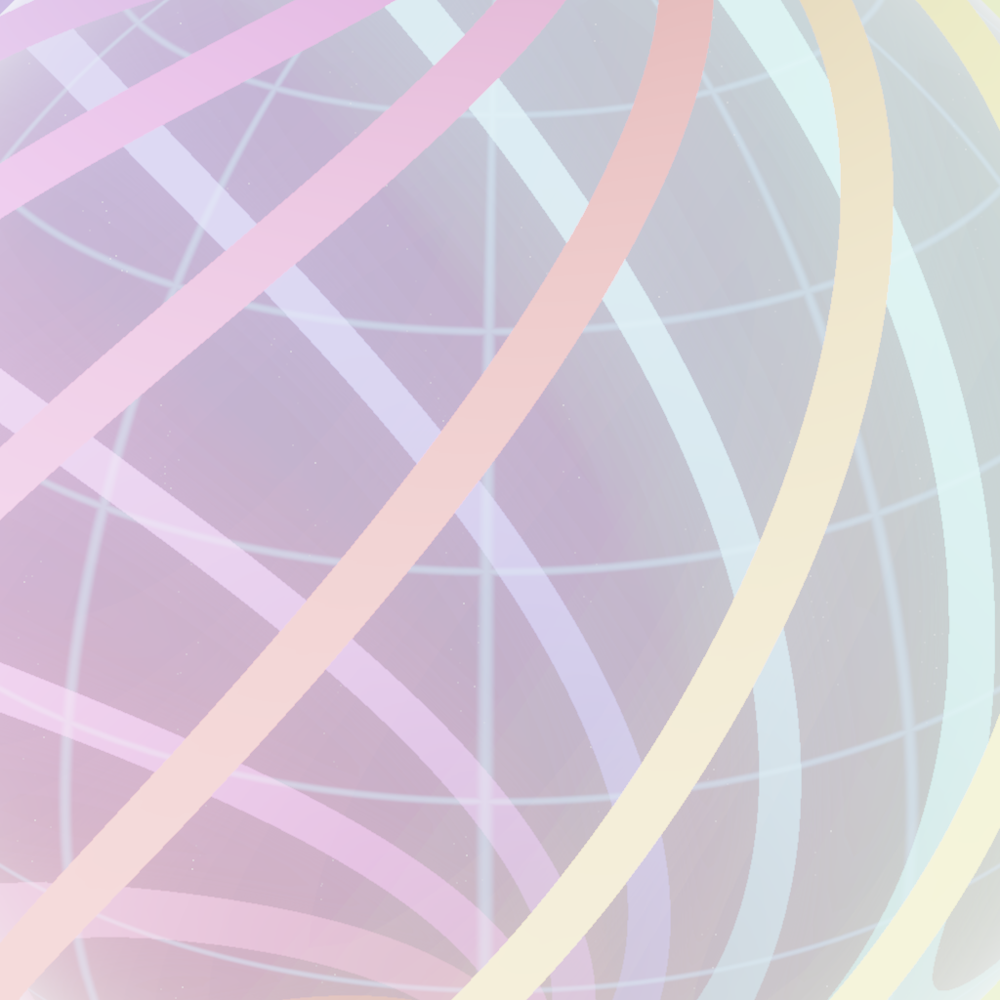
Test 48: Mandala Circles
✓ Success
Problem Prompt
**Objective** – Draw a "sacred‑geometry" mandala with exact **12‑fold radial symmetry** composed solely of mutually tangent circles.
**Geometry**
1. **Central circle** radius $R_{0}=0.30$; centre at origin.
2. **First ring** – 12 identical circles of radius
$
R_{1}=R_{0}\bigl(\csc{\tfrac{\pi}{12}}-1\bigr)^{-1}\approx0.10476,
$
centred on a circle of radius $C_{1}=R_{0}+R_{1}$ at polar angles $\theta_{n}=n\cdot30^{\circ}$.
(Each outer circle is tangent to the central circle and to its two immediate neighbours.)
3. **Bounding circle** of radius $1.00$ centred at origin, tangent to every first‑ring circle (the mandala fits exactly).
**Styling**
* Fill central circle #ffdd55; first‑ring circles alternate #66ccee / #ff7777 as $\theta_{n}$ increases; bounding circle transparent fill, 3‑px gold stroke.
* All inner circles have 2‑px black stroke.
* White background, 2000 × 2000 px PNG. No text.
**Deliverable** – single PNG file.
Judge Scores
Rendered Output
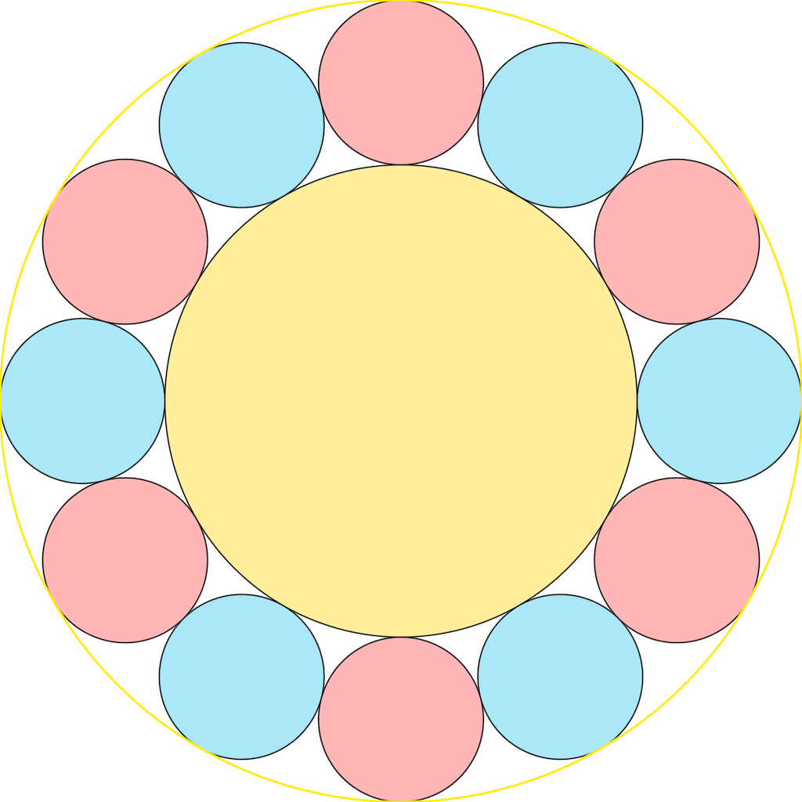
Test 49: Mandelbulb Fractal
✓ Success
Problem Prompt
**Objective**
Render a single, high‑resolution image of the order‑8 *Mandelbulb* fractal using ray‑marching with a distance estimator. No reference image is provided—follow the mathematical and stylistic requirements below.
**Fractal definition**
1. **Iteration** For a point **p** ∈ ℝ³ let
$
\mathbf z_{0}=\mathbf p,\qquad
\mathbf z_{k+1}=F(\mathbf z_{k})+ \mathbf p,
$
where
– write $\mathbf z_{k}$ in spherical co‑ordinates $(r,\theta,\phi)$ (with $r=‖\mathbf z_{k}‖$);
– apply the "power‑8 bulb" map
$
F(r,\theta,\phi)= r^{8}\bigl(\sin(8\theta)\cos(8\phi),\;\sin(8\theta)\sin(8\phi),\;\cos(8\theta)\bigr).
$
2. **Escape test** Stop after $N_{\max}=18$ iterations or when $‖\mathbf z_{k}‖>4$.
**Distance estimator**
Use the analytic estimator
$
d(\mathbf p)= \frac{‖\mathbf z_{n}‖\;\ln‖\mathbf z_{n}‖}{\bigl|\partial_r‖\mathbf z_{n}‖\bigr|},
$
accumulated alongside the iteration in standard fashion (analytic derivative chain‑rule). Terminate the ray when the accumulated distance to the surface falls below 0.001 of the scene radius or the ray exits a 5‑unit bounding sphere.
**Camera & lighting**
* Camera origin $(3,\,3,\,2)$ looking at the origin; right‑handed coordinate frame; 45° vertical FOV.
* One white point light at $(4,\,4,\,4)$; Phong shading with ambient = 0.1, diffuse = 0.7, specular = 0.2, shininess = 32.
**Colouring**
Map the *smooth escape value*
$
\nu = n + 1 - \frac{\ln\ln‖\mathbf z_{n}‖}{\ln 8}
$
to HSV hue = $\nu/18$, saturation = 1, value = 1, then convert to sRGB. Inside points (non‑escaped) are coloured #101010.
**Rendering requirements**
* Resolution ≥ 2000 × 2000 px, 4× SSAA.
* Gamma‑correct output (γ = 2.2), saved as 16‑bit PNG.
* White background for rays that miss the fractal. No text or overlays.
**Deliverable**
A single PNG file that meets all constraints.
Judge Scores
Rendered Output
Test 50: Menger Cube Fractal
✓ Success
Problem Prompt
**Objective**
Generate a shader that renders a high-quality 3D Menger cube fractal with at least 4 iterations of subdivision. The fractal should be rendered with proper depth, lighting, and material properties to clearly show the recursive cubic structure.
**Mathematical Specification**
1. **Menger Cube Definition**
The Menger cube is constructed by starting with a solid cube and recursively removing smaller cubes:
* Start with a unit cube centered at origin
* Divide each face into a 3×3 grid (9 squares per face)
* Remove the center square from each face and the cube that passes through all centers
* This removes 7 cubes total from the original, leaving 20 smaller cubes
* Recursively apply this process to each remaining cube
2. **Geometric Construction**
For iteration n, the Menger cube can be defined mathematically as:
* Divide the unit cube [-1,1]³ into 3ⁿ × 3ⁿ × 3ⁿ subcubes
* A subcube at position (i,j,k) is kept if and only if:
- At most 2 of the coordinates i, j, k have (coordinate mod 3) = 1
* This ensures the cross-shaped holes are maintained at every scale
3. **Rendering Requirements**
* **Minimum Iterations**: 4 complete iterations of the fractal construction
* **Resolution**: Image should be at least 1600×1600 pixels
* **Viewing Angle**: Position camera to show the 3D structure clearly (avoid orthogonal views)
* **Rotation**: Apply a slight rotation to all three axes to reveal the fractal structure
4. **Material and Lighting**
* **Base Material**: Use a metallic or crystalline appearance
* **Color Scheme**: Gradient coloring based on iteration level or depth
- Level 0 (largest cubes): Deep blue (#1a237e)
- Level 1: Blue (#283593)
- Level 2: Light blue (#3949ab)
- Level 3: Cyan (#26c6da)
- Level 4+: White (#ffffff)
* **Lighting**: Three-point lighting setup with:
- Key light from upper-left-front
- Fill light from lower-right
- Rim light from behind for edge definition
* **Shadows**: Soft shadows enabled to enhance depth perception
5. **Technical Implementation**
* Use ray marching or ray tracing for accurate distance field rendering
* Implement proper anti-aliasing to avoid jagged edges
* Ensure no z-fighting between adjacent cube faces
* Optimize rendering to handle the geometric complexity efficiently
6. **Background and Composition**
* **Background**: Dark gradient from #0d1117 (top) to #21262d (bottom)
* **Camera Position**: Positioned to create dynamic perspective showing multiple faces
* **Post-processing**: Subtle bloom effect on bright edges to enhance the crystalline appearance
**Deliverable**
A single high-resolution PNG image (≥1600×1600) showing the complete Menger cube fractal with clear visibility of the recursive structure, proper lighting, and the specified color scheme.
Judge Scores
Rendered Output
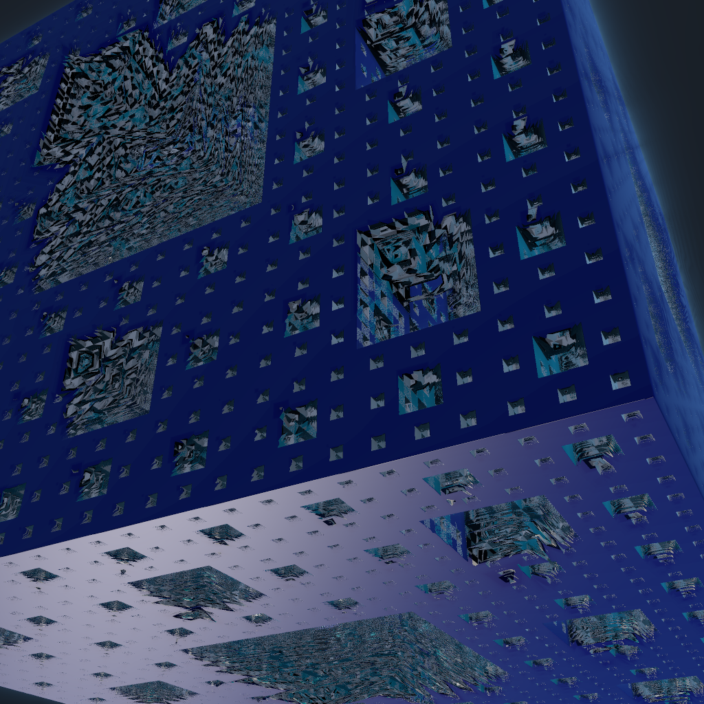
Test 51: Menger Sponge Fractal
✓ Success
Problem Prompt
**Objective**
Ray‑march an order‑4 Menger sponge implicit surface and produce a lit 3‑D render.
**Signed‑distance function (SDF)**
Recursively apply
```pseudo
float menger(vec3 p){
p = abs(p);
for(i=0;i<4;i++){
if(p.x<p.y) swap(p.x,p.y);
if(p.x<p.z) swap(p.x,p.z);
p = p*3.0 - 2.0*floor(p*3.0);
}
return (length(p)-1.0)/pow(3.0,4);
}
```
where the base cube spans $[-1,1]^3$.
**Camera & lighting**
* Eye (4,3,2), target (0,0,0), FOV = 40°.
* White point light at (8,5,6); Phong shading (ambient 0.05, diffuse 0.75, specular 0.2, shininess 64).
**Rendering**
* March step = signed‑distance × 0.8, max 256 steps, hit ε = 0.0005.
* Shadows via secondary march, soft shadow factor with 32 samples.
* Background: #e0f5ff. Resolution 2200 × 1500 px, 4× SSAA.
**Deliverable** 24‑bit PNG.
Judge Scores
Rendered Output
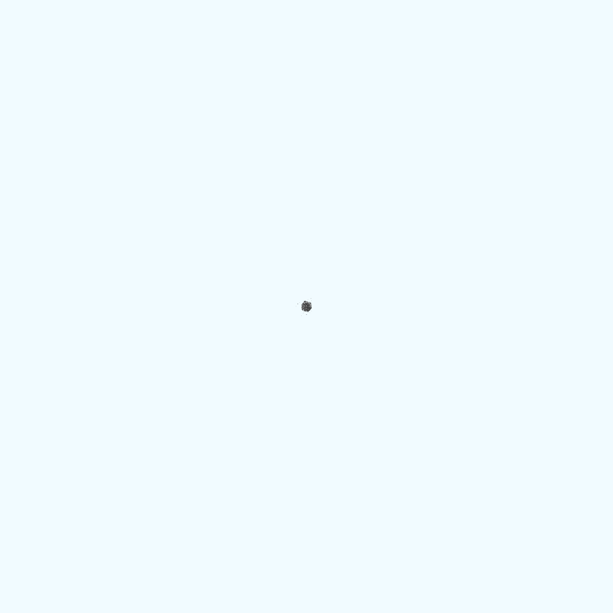
Test 52: Mobius Strip Half Twist
✓ Success
Problem Prompt
**Goal**
Model a Möbius strip obtained by taking a rectangle $u∈[0,2π],\;v∈[-0.2,0.2]$ and applying a single half‑twist (180°) before gluing the ends.
**Parametric surface**
$
\begin{aligned}
x &=\Bigl(1+\tfrac{v}{2}\cos\tfrac{u}{2}\Bigr)\cos u,\\
y &=\Bigl(1+\tfrac{v}{2}\cos\tfrac{u}{2}\Bigr)\sin u,\\
z &=\frac{v}{2}\sin\tfrac{u}{2}.
\end{aligned}
$
Sample grid 800 × 80 on $(u,v)$.
**Rendering**
* Front‑face colour #66ccff, back‑face colour #ff6699 (double‑sided material to emphasise single‑sidedness).
* Blinn–Phong (amb 0.1, diff 0.7, spec 0.2, shin 64). Light (4,3,4).
* Camera (4,3,2), FOV 40°, white background. 2200 × 1600 px PNG.
**Deliverable** PNG.
Judge Scores
Rendered Output
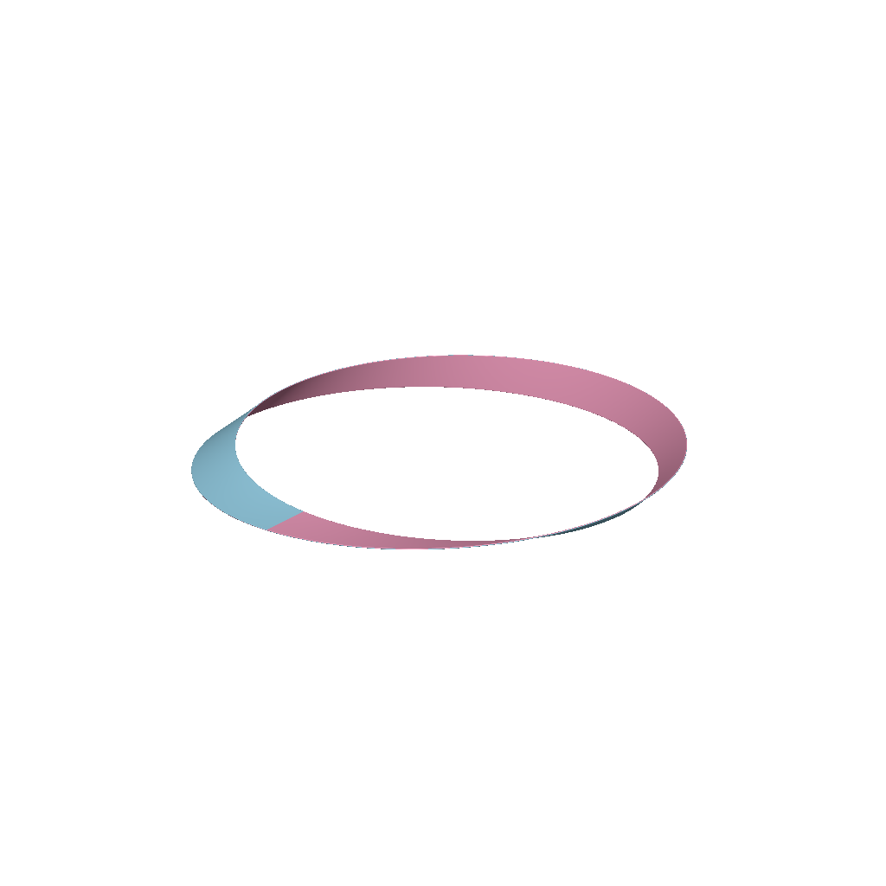
Test 53: Mobius Strip Triple Twist
✓ Success
Problem Prompt
**Objective**
Create a Möbius strip with 3 half-twists (540° total rotation) and color visualization.
**Construction**
Same rectangle as Problem 201 but **twist** angle $3π$:
Replace param by $\tfrac{3u}{2}$ in cos/sin terms. Colour ramp along midline hue 0→360° once per full loop to show triple twist. 2600×1800 PNG.
**Deliverable** PNG.
Judge Scores
Rendered Output
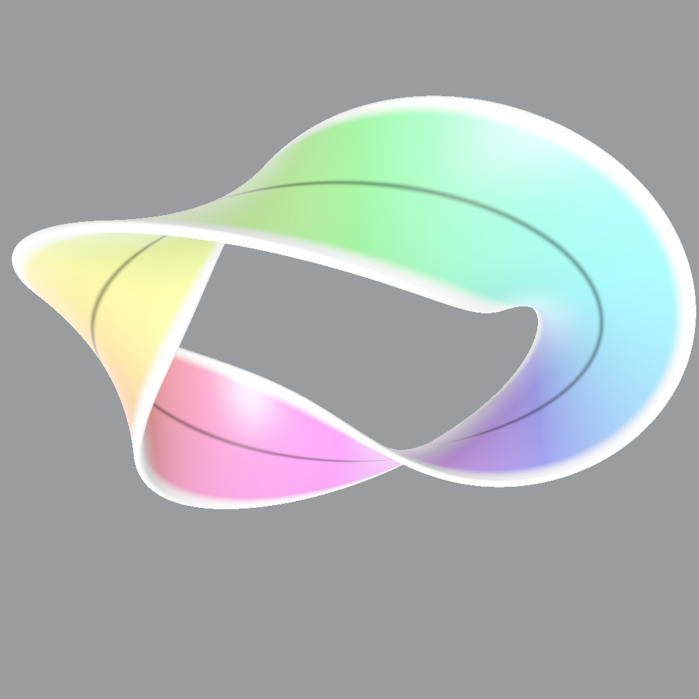
Test 54: Mobius Transformation 3D
✓ Success
Problem Prompt
**Objective**
Visualize a **3D Möbius transformation** applied to a cubic lattice, showing the conformal warping of space through complex inversion and rotation.
**Mathematical recipe**
1. Create 3D cubic lattice (7×7×7 grid points, spacing 0.5).
2. Embed in complex projective space: (x,y,z) → w = x + iy, v = z.
3. Apply Möbius transformation: f(w,v) = ((aw+b)/(cw+d), v/|cw+d|²)
- Use a=1+i, b=0.5, c=0.5i, d=1 for interesting distortion.
4. Extract real 3D coordinates: (Re(w'), Im(w'), Re(v')).
5. Connect transformed points maintaining lattice topology.
6. Render both original (faded) and transformed lattice.
**Styling**
* Original lattice: thin grey lines (radius 0.01), alpha 0.3.
* Transformed lattice: glowing tubes, radius varies with |cw+d|⁻¹.
* Color by transformation magnitude: blue (small) to red (large distortion).
* Add focal sphere at transformation singularity.
* Dark background with subtle grid plane at z=0.
* Volumetric glow for transformed elements.
* Camera at (4, 3, 3.5), looking at origin; FOV 42°.
* Resolution 2048 × 2048 px, 4× SSAA.
**Deliverable** Single PNG showing the Möbius transformation's conformal warping effect.
Judge Scores
Rendered Output
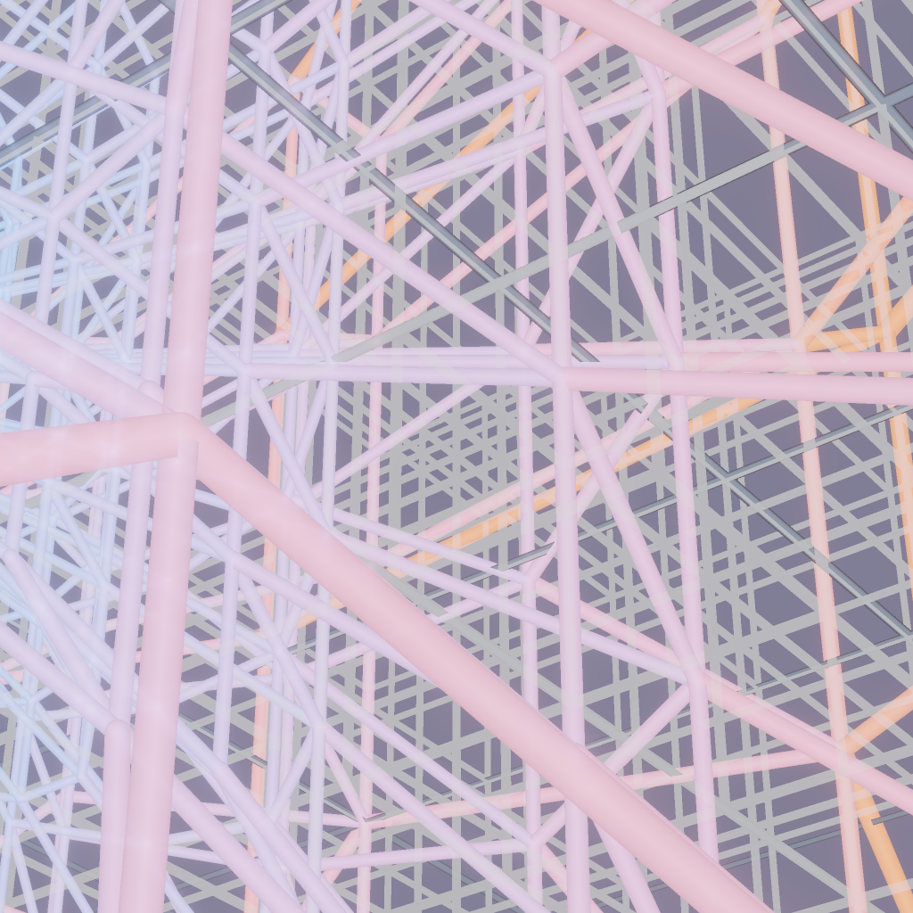
Test 55: Number Theory Music
✓ Success
Problem Prompt
**Objective**
Transform **number theory relationships** into a **3D musical score sculpture**, where mathematical properties become notes, rhythms, and harmonic structures.
**Mathematical recipe**
1. Prime factorization creates base rhythm: n = 2^a × 3^b × 5^c × ...
- Each prime p gets its own "instrument track" at height z = log(p)
- Exponent a determines note duration: quarter note × 2^a
2. Modular arithmetic creates melodies:
- Notes from n mod 12 (chromatic scale)
- Octave from floor(log₂(n))
3. Number sequences as musical phrases:
- Fibonacci: ascending spiral melody
- Collatz: chaotic percussion patterns
- Perfect numbers: sustained harmonic chords
4. Euler's totient φ(n) determines volume/dynamics
5. Greatest common divisors create harmonic intervals
**Styling**
* 3D staff lines as glass tubes, glowing with soft internal light
* Notes as crystalline polyhedra: shape determined by prime factors
* Color by harmonic function: tonic (blue), dominant (yellow), subdominant (green)
* Fibonacci spiral as golden ribbon weaving through the score
* Collatz sequences as lightning-like percussion strikes
* Time flows left to right, pitch increases vertically
* Particle effects show "sound waves" emanating from active notes
* Dark concert hall ambiance with spotlights on key sections
* Camera at (40, 20, -30), looking at center; FOV 50°
* Resolution 2400 × 2400 px, with depth of field
**Deliverable** Single PNG showing number theory as 3D musical sculpture
Judge Scores
Rendered Output
Test 56: Octagram Star Polygon
✓ Success
Problem Prompt
Construct a regular octagram {8/3} inscribed in a circle of radius 1. Outer vertices angle step 45°; connect every third vertex to produce eight spikes.
Derived inner radius:
r_in = cos(3π/8)/cos(π/8) ≈ 0.4142
Visual style:
- Fill solid royal-purple (#5A00FF)
- 3-px black outline with miter-limit 2
- Canvas 1800 × 1800, white background, star centred, outer tip 90% of canvas radius
- Drop-shadow (0,0,15 px, 25% opacity) for depth
Deliverable: Outputs a single image.
Judge Scores
Rendered Output
Test 57: Parametric Seashell
✓ Success
Problem Prompt
# Parametric Seashell
Create a realistic 3D seashell using parametric equations, with pearl-like material properties and dynamic lighting.
## Requirements:
1. Implement parametric seashell equations:
- x = (1-v/(2π)) * cos(n*v) * (1+cos(u)) + c*cos(n*v)
- y = (1-v/(2π)) * sin(n*v) * (1+cos(u)) + c*sin(n*v)
- z = b*v/(2π) + a*(1-v/(2π)) * sin(u)
Where n controls coiling, a/b control shape, c controls radius
2. Apply pearl-like material with:
- Iridescent color shifting
- Subsurface scattering approximation
- Specular highlights
3. Implement dynamic lighting with moving light source
4. Add subtle surface texture details
5. Include slow rotation to show all angles
6. Create an ocean-themed background
7. Add depth of field effect for realism
Judge Scores
Rendered Output
Test 58: Penrose Tiling P3
✓ Success
Problem Prompt
**Objective**
Generate a finite patch of the rhombic Penrose tiling (P3) by **three deflation steps** starting from a single thick rhombus.
**Algorithm**
1. Thick rhombus edge length = 1, angle 72°.
2. Apply the standard deflation rules (inflate by τ = (1+√5)/2, subdivide into thick + thin rhombi) three times.
3. Retain tiles whose centroids lie within radius 8 of the origin.
**Styling**
* Thick rhombi: fill #ffcc66; thin rhombi: #66aaff.
* Draw arrow matching rules: short red arrow centred on each edge, oriented inward for thick, outward for thin.
* Edge stroke 1.5 px black.
* Canvas 2500 × 2500 px, white background.
**Deliverable** PNG.
Judge Scores
Rendered Output
Test 59: Phyllotaxis Spiral
✓ Success
Problem Prompt
**Objective**
Generate a phyllotactic spiral pattern showing the golden angle arrangement found in sunflowers and pinecones, with color-coded Fibonacci spiral arms.
**Mathematical Foundation**
$
\begin{aligned}
\theta_n &= n \times 137.5° \text{ (golden angle)}\\
r_n &= c\sqrt{n} \text{ (Fermat's spiral)}\\
x_n &= r_n \cos(\theta_n)\\
y_n &= r_n \sin(\theta_n)
\end{aligned}
$
where $n$ is the seed index, $c = 0.15$ is the scaling factor.
**Implementation**
* Generate 500 seeds using the above equations
* Each seed rendered as a circle with radius $0.02 + 0.01\sqrt{n/500}$ (growth effect)
* Color seeds by their spiral arm membership:
- Identify which Fibonacci spiral (8, 13, 21, 34, 55) the seed belongs to
- Use distinct colors: #FF6B6B, #4ECDC4, #45B7D1, #F7DC6F, #BB8FCE
* Background: radial gradient from #2C3E50 (center) to #1A252F (edge)
**Styling**
* Canvas: 2048 × 2048 px
* Anti-aliasing: 4× SSAA
* Add subtle glow effect to seeds (soft Gaussian blur)
* Center spiral at canvas center
**Deliverable** PNG showing the complete phyllotactic pattern with clearly visible Fibonacci spirals.
Judge Scores
Rendered Output
Test 60: Poincare Disc
✓ Success
Problem Prompt
**Objective**
Create a single high‑resolution image that shows the *regular hyperbolic triangle tessellation* $\{3,8\}$ (eight equilateral triangles meet at every vertex) in the *Poincaré disk model*. No reference image is provided; rely exclusively on the specification below.
**Mathematical specification**
1. **Model** Represent the hyperbolic plane as the open unit disk
$
\mathbb D=\{(x,y)\in\mathbb R^{2}\mid x^{2}+y^{2}<1\},
$
endowed with the Poincaré metric. Geodesics are Euclidean straight lines through the origin or circle arcs orthogonal to the unit circle $\partial\mathbb D$.
2. **Tessellation** Use the regular tiling with Schläfli symbol $\{3,8\}$: each face is a geodesic triangle; exactly eight triangles meet at every vertex. Begin with one triangle whose vertices lie on rays separated by angle $45^{\circ}$ and whose hyperbolic edge lengths are all equal; repeat by reflections in its edges until the disk is filled.
3. **Checkerboard colouring**
* Assign *black* to the central seed triangle.
* Colour the tessellation by parity of edge distance: adjacent triangles must have opposite colours, yielding a black‑white checkerboard.
4. **Rendering requirements**
* Resolution ≥ 1600 × 1600 px, antialiased.
* Draw the Euclidean boundary circle of $\mathbb D$ with a 4‑px solid black stroke; nothing is drawn outside the circle (pure white).
* Faces are filled *flat* (no gradients) in pure black or pure white; edges are 1‑px black lines.
* No labels, no title, no additional decoration.
**Deliverable**
A single PNG image that meets all geometric and stylistic constraints.
Judge Scores
Rendered Output

Test 61: Probability Weather Patterns
✓ Success
Problem Prompt
**Objective**
Transform **probability distributions** into **dynamic weather systems**, where statistical properties manifest as atmospheric phenomena.
**Mathematical recipe**
1. Normal distribution N(μ,σ²): stable high-pressure systems
- Mean μ determines center location
- Variance σ² creates pressure gradient (storm size)
- Multiple normals create weather fronts
2. Exponential distribution: rain intensity patterns
- λ parameter controls precipitation rate
- Memoryless property creates sudden downpours
3. Cauchy distribution: extreme weather events
- Heavy tails generate tornadoes at outliers
- Undefined variance causes chaotic wind patterns
4. Beta distribution: cloud coverage
- α,β parameters shape cloud density gradients
- Bimodal beta creates cumulonimbus formations
5. Multivariate correlations: jet streams connecting systems
**Styling**
* Volumetric cloud rendering with multiple scattering
* Pressure systems as swirling atmospheric spirals
* Rain rendered as refractive droplet sheets
* Lightning bolts at Cauchy tail events (>3σ)
* Wind flow lines colored by velocity (blue=calm, red=hurricane)
* Ground view: rolling hills with weather shadows
* Time-lapse feel: blurred cloud movement trails
* Atmospheric perspective with realistic haze
* Crepuscular rays through cloud breaks
* Camera at (0, 5, -100), tilted up 10°; FOV 70°
* Resolution 2400 × 2400 px, HDR lighting
**Deliverable** Single PNG showing probability distributions as weather map
Judge Scores
Rendered Output
Test 62: Quantum Probability Waves
✓ Success
Problem Prompt
**Objective**
Visualise the probability density of a 2‑D infinite square‑well eigenstate superposition.
**Quantum system**
* Potential $V(x,y)=0$ for $x,y\in[0,L]$ and $+\infty$ elsewhere; take $L=1$.
* Eigenfunctions: $\psi_{n,m}(x,y)=2\sin(n\pi x/L)\sin(m\pi y/L)$.
* Superposed state
$
\Psi(x,y)=\tfrac{1}{\sqrt3}\bigl[\psi_{1,1}+e^{i\pi/3}\psi_{2,3}+e^{-i\pi/4}\psi_{3,2}\bigr].
$
* Probability density $P=|\Psi|^{2}$.
**Rendering**
* Sample $1024\times1024$ grid on domain; compute $P$.
* Colour with perceptually uniform "magma" palette (black→bright yellow).
* Display isolines for $P=0.2,0.4,0.6$ as 1‑px white curves.
* 1600 × 1600 px PNG, 60‑px pure‑black frame around plot. No axes, no text.
**Deliverable** One PNG.
Judge Scores
Rendered Output
Test 63: Ramanujan Mock Theta
✓ Success
Problem Prompt
Present a glowing annular "heat-disk" that lets the viewer viscerally experience how Ramanujan's third-order mock-theta function f(q) blossoms near the unit circle and attenuates radially. The final image should resemble a celestial nebula with fiery inner corona fading to dusk blues.
Mathematics:
- Define f(q) = 1 + Σ(n=1 to 50) q^(n²) / [(1+q)²(1+q²)²...(1+q^n)²]
- Complex argument parameterisation: q(t,θ) = e^(-t) * e^(iθ), t ∈ [0,2], θ ∈ [0,2π]
- Pre-compute magnitude |f(q)| on a polar grid 2048 × 2048 (radial samples 1024, angular 1024)
Colour transfer function:
- Use "magma" perceptual palette (Matplotlib implementation) mapped linearly:
- |f| = 1 → palette index 0.15 (deep purple)
- |f| = 2.3 → palette index 0.85 (white-yellow)
- Clamp outside range
- Overlay faint concentric gold rings at t = 0.5, 1.0, 1.5 (guides to show decay)
Display geometry:
- Canvas 2048 × 2048 px, black outside annulus
- Polar origin at centre; outer radius corresponds to t=2.0
- Radial ticks labelled with τ font (optional: small sans-serif)
File: PNG-24
Deliverable: Outputs a single image.
Judge Scores
Rendered Output
Test 64: Reaction Diffusion Patterns
✓ Success
Problem Prompt
**Objective**
Simulate the Gray–Scott reaction–diffusion system on a square domain until visually stable patterns emerge; output a single coloured image of the $u$-field.
**Model**
$
\begin{aligned}
\partial_t u &= D_u\nabla^{2}u - uv^{2} + F(1-u),\\
\partial_t v &= D_v\nabla^{2}v + uv^{2} - (F+k)v,
\end{aligned}
$
with parameters $D_u=0.14,\;D_v=0.06,\;F=0.035,\;k=0.065$ (classic "zebra / spot" regime).
**Numerics**
* Grid $512\times512$, spacing $h=1$.
* Time‑step $\Delta t=1.0$, explicit Euler, 20 000 steps.
* Laplacian via 5‑point stencil, periodic boundaries.
* Initial condition: $u\equiv1,\;v\equiv0$ plus a $20\times20$ square in centre where $u=0.5,\;v=0.25$ plus 2 % uniform noise.
**Visualisation**
* Map $u(x,y,T)$ to colour with "turbo" palette (0 → dark blue, 1 → yellow‑white).
* 2048 × 2048 px PNG, no axes, pure white 40‑px margin.
**Deliverable** One PNG adhering to the above.
Judge Scores
Rendered Output
Test 65: Regular Dodecahedron
✓ Success
Problem Prompt
Regular dodecahedron circumscribed sphere radius = 1. Use golden ratio φ=(1+√5)/2.
Material & lighting:
- Bronze (#b57b33) metallic, roughness 0.25
- HDR "studio soft" light, key from (4,4,6)
- Camera (4,-3,2.5), FOV 30°
File: 2600×2000
Deliverable: Outputs a single image.
Judge Scores
Rendered Output
Test 66: Regular Icosahedron
✓ Success
Problem Prompt
**Objective**
Create a high-resolution visualization of a regular icosahedron, one of the five Platonic solids. The icosahedron should be rendered with precise geometric accuracy and aesthetic appeal.
**Mathematical Specification**
1. **Geometric Definition**
- A regular icosahedron has 20 equilateral triangular faces, 12 vertices, and 30 edges
- Vertex coordinates (assuming unit circumradius):
* (0, ±1, ±φ)/√(φ²+1) where φ = (1+√5)/2 (golden ratio)
* (±1, ±φ, 0)/√(φ²+1)
* (±φ, 0, ±1)/√(φ²+1)
- All vertices lie on a unit sphere
2. **Face Structure**
- 20 triangular faces, each an equilateral triangle
- Each vertex connects to exactly 5 edges
- Dihedral angle between adjacent faces: arccos(-√5/3) ≈ 138.19°
3. **Rendering Requirements**
- Display as a solid object with visible face boundaries
- Orient with one vertex pointing upward along the +y axis
- Apply rotation: slow continuous rotation around the y-axis (1 revolution per 8 seconds)
4. **Visual Style**
- Face coloring: Use a gradient based on face normal direction
* Hue = atan2(ny, nx) mapped to [0, 360°]
* Saturation = 0.7
* Value = 0.5 + 0.5 * nz (where n is the face normal)
- Edge rendering: Dark grey lines (RGB: 0.2, 0.2, 0.2) with width ≈ 2 pixels
- Vertices: Small spheres at each vertex (radius ≈ 0.02), colored white
5. **Lighting and Shading**
- Use Phong shading with:
* Ambient: 0.3
* Diffuse: 0.6
* Specular: 0.1 (shininess: 32)
- Light source at position (2, 3, 2)
- Background: Gradient from light blue (top) to white (bottom)
6. **Camera and Output**
- Perspective projection with 45° field of view
- Camera positioned at (0, 0, 4) looking at origin
- Output resolution: 1600 × 1600 pixels
- Enable 4× antialiasing
Deliverable: Outputs a single image.
Judge Scores
Rendered Output
Test 67: Regular Octahedron
✓ Success
Problem Prompt
Regular octahedron edge = 2. Position one vertex up (0,0,√2).
Rendering:
- Solid slate-gray faces (#666d78), glossy; edge bevel 0.05
- Key light (5,3,6). White BG. 2000×1600
Deliverable: Outputs a single image.
Judge Scores
Rendered Output
Test 68: Regular Tetrahedron
✓ Success
Problem Prompt
Regular tetrahedron edge = 2. Vertices: (1,1,1), (-1,-1,1), (-1,1,-1), (1,-1,-1) divided by √3 to keep circumsphere radius 1.
Visuals:
- Matte golden material (#ffcc55) with anisotropic highlights
- Softbox light (-4,4,6)
- Ground plane mirror 30% reflective
- Camera (3,-4,2.5), FOV 35°
File: 2200×1600
Deliverable: Outputs a single image.
Judge Scores
Rendered Output
Test 69: Reproduce Image Fabrice Villard
✓ Success
Problem Prompt
Reproduce the provided reference image using a shader.
Your shader must analytically or mathematically recreate the scene.
CRITICAL: Do NOT just read the actual image pixels or hardcode pixel arrays. If you do this, you will receive a 0% score. You must re-create the underlying procedural shapes, colors, and patterns.
Deliverable: Outputs a single image that matches the reference image as closely as possible.
Judge Scores
Rendered Output
Test 70: Reproduce Image Jason Leung
✓ Success
Problem Prompt
Reproduce the provided reference image using a shader.
Your shader must analytically or mathematically recreate the scene.
CRITICAL: Do NOT just read the actual image pixels or hardcode pixel arrays. If you do this, you will receive a 0% score. You must re-create the underlying procedural shapes, colors, and patterns.
Deliverable: Outputs a single image that matches the reference image as closely as possible.
Judge Scores
Rendered Output
Test 71: Reproduce Image Photoholgic
✓ Success
Problem Prompt
Reproduce the provided reference image using a shader.
Your shader must analytically or mathematically recreate the scene.
CRITICAL: Do NOT just read the actual image pixels or hardcode pixel arrays. If you do this, you will receive a 0% score. You must re-create the underlying procedural shapes, colors, and patterns.
Deliverable: Outputs a single image that matches the reference image as closely as possible.
Judge Scores
Rendered Output
Test 72: Reproduce Image Rayul
✓ Success
Problem Prompt
Reproduce the provided reference image using a shader.
Your shader must analytically or mathematically recreate the scene.
CRITICAL: Do NOT just read the actual image pixels or hardcode pixel arrays. If you do this, you will receive a 0% score. You must re-create the underlying procedural shapes, colors, and patterns.
Deliverable: Outputs a single image that matches the reference image as closely as possible.
Judge Scores
Rendered Output
Test 73: Riemann Surface Branch Cuts
✓ Success
Problem Prompt
**Objective**
Render the two‑sheet Riemann surface of $w=\sqrt{z}$ above the complex plane, using height = $\Re w$ and colour = $\operatorname{arg}w$.
**Construction**
* Domain: $z=re^{i\phi}$ with $r\in[0,4],\;\phi\in(-\pi,\pi]$.
* Two sheets: choose signs $+\sqrt{r}$ and $-\sqrt{r}$.
* Introduce **branch cut** along negative real axis: join sheets there.
* Triangulate with polar grid 800 × 800, map to $(x,y,\Re w)$.
**Styling**
* Colour via HSV: hue = $\phi/2\pi$ (wrap‑around), sat = 1, val = 1; upper sheet full opacity, lower sheet 70 % opacity.
* Edge outlines 1‑px black; hide underside faces.
* Camera at $(7,0,5)$ looking at origin; 30° FOV, perspective.
* Lighting: ambient 0.2 + white directional (−0.3,−0.4,−1).
* 2200 × 1600 px PNG, white background.
**Deliverable** One PNG.
Judge Scores
Rendered Output
Test 74: Rose Curves
✓ Success
Problem Prompt
**Objective** – Plot the polar curve $r = \cos(k\theta)$ for **k = 7** on θ ∈ [0,2π].
**Rendering rules**
* Use 8000 uniformly spaced θ‑samples; connect with Catmull–Rom spline for smoothness.
* Stroke width 6 px, colour #ff55aa, opacity 0.9.
* Place on 1800 × 1800 px white canvas; origin centred; radial scale so outer petal tip touches 90 % of canvas radius.
* Add thin (#444444, 1 px) polar grid: circles at radii 0.25, 0.5, 0.75, 1.0 and radial spokes every 15°.
**Deliverable** – PNG.
Judge Scores
Rendered Output
Test 75: Rotating Hypercube Projection
✓ Success
Problem Prompt
**Objective**
Visualize a 4D hypercube (tesseract) through rotation and projection to 2D.
**Construction**
Generate tesseract vertices (±1,±1,±1,±1). Apply 4‑D rotation
$R_{xy}(θ)\,R_{zw}(θ)$ with θ=45°. Orthographic project to 3‑D by dropping w then to 2‑D via perspective camera (3,2,2).
**Styling**
Draw edges 3 px #00aaff, hidden edges 1 px dashed grey. 2400×1800 PNG.
**Deliverable** PNG.
Judge Scores
Rendered Output
Test 76: Rounded Box
✓ Success
Problem Prompt
Create a 3D rounded box (dimensions 2x3x1.5) with rounded edges (radius 0.3) centered at origin. Material: matte mint green plastic (RGB 0.3, 0.8, 0.6). Lighting: soft ambient (0.3) plus key light from top-right. Background: light gray gradient. Camera: perspective view at (4, 3, 5) looking at origin.
Outputs a single image.
Judge Scores
Rendered Output
Test 77: Schwarzschild Black Hole
✓ Success
Problem Prompt
**Objective**
Produce a physically motivated single‑frame visualisation of a non‑rotating (Schwarzschild) black hole with background starfield distorted by gravitational lensing.
**Physical specification**
1. **Metric** Schwarzschild in geometric units $c=G=1$:
$\displaystyle ds^{2}=-(1-\tfrac{2M}{r})\,dt^{2}+\frac{dr^{2}}{1-\tfrac{2M}{r}}+r^{2}(d\theta^{2}+\sin^{2}\theta\,d\phi^{2}).$
2. **Camera** Static observer at $r=10M,\;\theta=\pi/2$, facing inward ($-\hat r$). Horizontal FOV = 100°.
3. **Background** Uniform starfield: 10 000 point sources randomly distributed over celestial sphere, visual magnitude uniform. Stars are white.
4. **Ray tracing** Integrate null geodesics backwards from camera through the metric until (a) $r≤2M$ (ray captured) or (b) $r≥1000M$ (ray escapes to starfield). Use fourth‑order Runge‑Kutta with adaptive step; absolute error ≤ 10⁻⁶ M.
5. **Photon ring** Rays with impact parameter $b$ within 1 % of the critical value $b_{\mathrm crit}=3\sqrt{3}M$ are coloured bright amber (#ffaa33) to highlight the ring.
**Image construction**
* Resolution = 1920 × 1080 px.
* Captured rays → pure black. Escaping rays → colour of intersected star (white); if no star hit within 0.2° of ray, colour deep navy #000020.
* Apply 0.8‑px Gaussian blur to stars for finite PSF.
* No accretion disc, no text, no lens flare.
**Deliverable**
24‑bit PNG, sRGB.
Judge Scores
Rendered Output
Test 78: Sierpinski Tetrahedron
✓ Success
Problem Prompt
Create a crystalline Sierpinski tetrahedron that looks as if it were carved from icy quartz. Recursion depth must be high enough that the viewer sees the self-similar voids repeat at least four scales.
Mathematics:
- Start with a regular tetrahedron of edge length 2, centred at origin, one face parallel to the ground (z = -0.408)
- Recursive rule (depth d): subdivide parent into four child tetrahedra of half edge-length, one at each vertex
- Use depth 4 → total tetrahedra count 1 + 4 + 4² + 4³ + 4⁴ = 341
Mesh assembly:
- Generate explicit triangle mesh for each child; de-duplicate coincident faces to keep only the outer hull
- Assign depth-mapped glass-blue tint:
- depth 0 → #cce6ff, ... depth 4 → #0040ff
- Vertex normals averaged for smooth refraction look
Lighting & camera:
- HDRI sky light (even cloudy mid-tone) plus white key at (6,4,9)
- Camera position (4,4,3), focal length 50 mm, FOV ≈ 39°
- Transparent ground shadow catcher
Output: PNG-32 (RGBA), 2600 × 2000 px
Deliverable: Outputs a single image.
Judge Scores
Rendered Output
Test 79: Sierpinski Triangle 6 Iterations
✓ Success
Problem Prompt
**Objective**
Generate the Sierpinski triangle fractal through recursive subdivision.
**Construction**
* Start with upright equilateral triangle side = 1.
* Remove central inverted triangle recursively 6 levels.
* Stroke 1 px black; fills white. 2400 × 2080 px PNG.
**Deliverable** – PNG.
Judge Scores
Rendered Output
Test 80: Spherical Inversion Mapping
✓ Success
Problem Prompt
**Objective**
Visualize **spherical inversion** transformation applied to a 3D grid structure, showing how space is turned inside-out through a reference sphere.
**Mathematical recipe**
1. Create a 3D grid of thin cylinders (11×11×11 grid, spacing 0.4 units).
2. Apply spherical inversion with center at origin and radius R = 2.0:
- For point p with |p| > 0: p' = (R²/|p|²) · p.
- Points inside sphere move outside, points outside move inside.
3. Render both original grid (semi-transparent) and inverted grid.
4. Add reference inversion sphere (radius 2.0) as wireframe.
5. Color code by distance from origin:
- Original grid: fade from white (center) to blue (edges).
- Inverted grid: fade from red (was center) to yellow (was edges).
**Styling**
* Grid cylinders: radius 0.015, semi-transparent (alpha 0.6).
* Inversion sphere: wireframe only, white color, alpha 0.3.
* Background: deep black with subtle blue gradient.
* Ambient occlusion for depth perception.
* Camera at (5, 4, 3), looking at origin; FOV 40°.
* Add glow effect to inverted grid elements.
* Resolution 2048 × 2048 px, 4× SSAA.
**Deliverable** Single PNG showing the spatial inversion transformation clearly.
Judge Scores
Rendered Output
Test 81: Spinning Gear Assembly
✓ Success
Problem Prompt
**Objective**
Create a mechanical gear assembly with proper kinematic relationships and angular velocity visualization.
**Gears**
* Gear A: 24 teeth, radius 2.
* Gear B: 16 teeth, radius 1.4 (meshes with A).
* Gear C: 12 teeth, radius 1.0 (meshes with B).
Module = 0.26 rad per tooth (involute profiles optional). Place centres along x‑axis with proper centre distances. Initial angular positions so teeth engage.
**Spin animation** not required; instead show instantaneous state with angular velocities vector glyphs: size ∝ ω (ω_A = 1, ω_B = −1.5, ω_C = 1.333).
**Styling**
Orthographic view, top‑down slight tilt 15°, grey metal. 2200×1600 PNG.
**Deliverable** PNG.
Judge Scores
Rendered Output
Test 82: Spinning Vortex Funnel
✓ Success
Problem Prompt
**Objective**
Visualize fluid flow in a vortex funnel using scalar fields and streamlines.
**Physics**
Scalar field $ρ(r,z)=\exp[-(r/2)^{2}]\,\exp[-(z/6)^{2}]$. Flow lines tangential velocity $v_θ=4/r$.
Plot 150 streamlines starting radii 0.5–3, z=0 to z=‑6.
**Styling**
Funnel surface semi‑transparent blue. 2400×2000 PNG.
**Deliverable** PNG.
Judge Scores
Rendered Output
Test 83: Spiral Staircase Tower
✓ Success
Problem Prompt
**Objective**
Create a tower with twin helical staircases wrapped around a central column.
**Construction**
**Central column** radius 0.4, height 8.
**Twin helices (stairs)** – two staircases 180° apart: step depth 0.3, rise 0.2, width 1.2. Pitch 1 turn per 1.6 height (5 turns). 160 steps each. Railings optional.
**Styling**
Camera (6,4,6). 2600×2600 PNG.
**Deliverable** PNG.
Judge Scores
Rendered Output
Test 84: Superformula Explorer
✓ Success
Problem Prompt
# Superformula Explorer
Create an interactive WebGL visualization of Gielis' superformula, showing how parameter changes create diverse natural and abstract shapes.
## Requirements:
1. Implement the superformula:
r(θ) = (|cos(m*θ/4)/a|^n2 + |sin(m*θ/4)/b|^n3)^(-1/n1)
2. Display multiple shapes simultaneously showing:
- Star-like forms (varying m)
- Flower-like patterns (specific n values)
- Polygonal shapes
- Asymmetric forms
3. Animate smooth transitions between parameter sets
4. Use HSL color mapping based on:
- Angle (hue)
- Radius (lightness)
- Parameter values (saturation)
5. Add 3D extrusion option for selected shapes
6. Include parameter value display
7. Create organic particle effects around shapes
Judge Scores
Rendered Output
Test 85: Topology Fabric Texture
✓ Success
Problem Prompt
**Objective**
Visualize **topological invariants** as **woven fabric textures**, where mathematical properties manifest as thread patterns, weave structures, and material behaviors.
**Mathematical recipe**
1. Base surface: Klein bottle parameterization in 4D
2. Fundamental group π₁ determines weave pattern:
- Generators become primary thread directions
- Relations create over/under crossing rules
3. Homology groups as thread colors:
- H₀: connectivity threads (white)
- H₁: loop threads (spectrum colors by generator)
- H₂: surface threads (metallic gold)
4. Euler characteristic χ affects fabric density: thread count = 100/|χ-2|
5. Orientability determines thread twist:
- Orientable: consistent S-twist
- Non-orientable: alternating S/Z twist creating Möbius bands
**Styling**
* Photorealistic fabric rendering with individual thread fibers visible
* Subsurface scattering for translucent silk-like appearance
* Thread thickness varies with homology dimension (H₀ thin, H₂ thick)
* Iridescent sheen on non-orientable regions
* Fabric draped over invisible Klein bottle form
* Macro photography aesthetic: extreme close-up with shallow depth
* Key light from upper left, fill light from below
* Visible fabric imperfections where topology forces thread stress
* Camera at (2, 1.5, -3), looking at origin; FOV 25° (telephoto)
* Resolution 2400 × 2400 px, with fabric texture details
**Deliverable** Single PNG showing topology as woven fabric structure
Judge Scores
Rendered Output
Test 86: Torus Donut Parametric
✓ Success
Problem Prompt
**Objective**
Create a mathematically precise visualization of a torus (donut shape) with parametric surface coloring and advanced rendering techniques.
**Mathematical Specification**
1. **Parametric Definition**
- Torus parameters:
* Major radius (R): 2.0 units
* Minor radius (r): 0.7 units
- Parametric equations (u, v ∈ [0, 2π]):
* x = (R + r cos(v)) cos(u)
* y = (R + r cos(v)) sin(u)
* z = r sin(v)
2. **Surface Properties**
- Generate smooth normals from parametric derivatives
- Calculate Gaussian curvature K = cos(v) / (r(R + r cos(v)))
- Calculate mean curvature H = (R + 2r cos(v)) / (2r(R + r cos(v)))
3. **Coloring Scheme**
- Base color mapping using parametric coordinates:
* Hue: H = u / (2π) × 360°
* Saturation: S = 0.5 + 0.5 × sin(v)
* Value: V = 0.7 + 0.3 × cos(v)
- Overlay Gaussian curvature visualization:
* Positive curvature regions: Subtle red tint
* Negative curvature regions: Subtle blue tint
* Zero curvature: Neutral
4. **Material and Texture**
- Base material: Glossy ceramic
* Diffuse: 0.8
* Specular: 0.3
* Shininess: 64
- Surface texture: Subtle parametric grid lines
* Grid spacing: π/8 in both u and v directions
* Line color: 20% darker than surface color
* Line width: 0.5 pixels
5. **Animation and Transformation**
- Primary rotation: Around y-axis at 0.1 rad/s
- Secondary rotation: Around its own major axis at 0.05 rad/s
- Gentle oscillation: Minor radius varies as r = 0.7 + 0.1 × sin(2πt/3)
6. **Lighting and Environment**
- Three-point lighting:
* Key light: Position (3, 4, 2), warm white, intensity 0.7
* Fill light: Position (-2, 1, 3), cool white, intensity 0.4
* Back light: Position (0, -2, -4), white, intensity 0.3
- Ambient occlusion for enhanced depth
- Environment: Subtle gradient (dark blue top to light blue bottom)
7. **Output Specifications**
- Resolution: 1600 × 1600 pixels
- Antialiasing: 4× SSAA
- Depth of field: Slight blur at edges (focal distance: 5 units)
- Camera: Position (4, 3, 5), looking at origin, FOV 40°
Deliverable: Outputs a single image.
Judge Scores
Rendered Output
Test 87: Trefoil Alexander Polynomial
✓ Success
Problem Prompt
Produce a radar-petal polar chart of the trefoil's Alexander polynomial Δ(t) = t² - t + 1, evaluated on the unit circle t = e^(iθ). The magnitude curve should form a symmetric six-petal flower that glows like neon tubing against a midnight background.
Mathematics:
- Evaluate r(θ) = |Δ(e^(iθ))| = √((1-cos θ)² + sin² θ). Closed-form simplifies to 2sin(θ/2).
- Because r(θ+π) = r(θ), six peaks occur at θ = 0, ±2π/3, ±4π/3, π.
Plot specs:
- Domain θ ∈ [0,2π] sampled 12,000 points
- Radial scale: max radius = 1.414 units maps to 90% of 1800 × 1800 canvas
- Curve stroke: hot-pink (#FF0088) 6 px; outer glow (duplicate stroke blurred σ = 3 px, opacity 20%)
- Background nearly-black navy (#040418)
- Polar grid (thin dashed #555555) with five concentric circles and 30° spokes
Deliverable: Outputs a single image.
Judge Scores
Rendered Output
Test 88: Trigonometric Mandalas
✓ Success
Problem Prompt
**Objective** – Create a "harmonic mandala" defined by radial modulation
$
r(θ)=1+0.15\sin(6θ)+0.10\sin(12θ)+0.06\sin(18θ),\qquad θ∈[0,2π].
$
**Rendering directives**
* Plot polar curve with 10 000 samples; convert to Cartesian.
* Fill interior with gradient: centre #001133 → edge #55ffee (radial linear gamma 2.2).
* Outline 3‑px #ffffff.
* Add semi‑transparent (α 0.3) duplicate of the curve scaled 0.7×, filled #ff66cc.
* Canvas 1800 × 1800 px black.
**Deliverable** – PNG.
Judge Scores
Rendered Output
Test 89: Truncated Icosahedron
✓ Success
Problem Prompt
Create a truncated icosahedron (soccer ball shape) with 12 pentagonal faces (black) and 20 hexagonal faces (white). Edge length 1.0. Material: slightly glossy with subtle leather texture. Lighting: outdoor daylight. Background: grass green gradient. Camera: classic 3/4 view showing multiple face types.
Outputs a single image.
Judge Scores
Rendered Output
Test 90: Wave Deformation Field
✓ Success
Problem Prompt
**Objective**
Visualize a **3D wave deformation field** applied to a planar mesh, creating complex interference patterns from multiple wave sources.
**Mathematical recipe**
1. Create high-resolution plane mesh (100×100 vertices, 5×5 units).
2. Place 3 wave sources at: (-1.5, 0), (1.5, 0), (0, 1.5).
3. Wave deformation for each source i:
- Height: h_i(x,y,t) = A_i · sin(k|r-r_i| - ωt + φ_i) / (1 + |r-r_i|)
- A_i = [0.4, 0.3, 0.5], k = 2π, ω = 0, φ_i = [0, π/3, 2π/3].
4. Total deformation: z = Σh_i(x,y,0) (static snapshot).
5. Apply smooth normal recalculation for proper shading.
6. Add edge clamping to prevent boundary artifacts.
**Styling**
* Surface material: Iridescent shader based on view angle and height.
* Color mapping: Deep blue (troughs) through cyan, green, yellow to white (peaks).
* Rim lighting to emphasize wave crests.
* Subtle displacement texture for water-like microdetail.
* Fog effect increasing with distance.
* Camera at (4, -3, 2.5), looking at origin; FOV 35°.
* Dark blue-black gradient background.
* Resolution 2048 × 2048 px, 4× SSAA.
**Deliverable** Single PNG showing the complex wave interference pattern with realistic water-like appearance.
Judge Scores
Rendered Output
Test 91: Weierstrass Function
✓ Success
Problem Prompt
Create a wide panoramic "mathematical seismograph" that vividly conveys how the Weierstrass function oscillates at every spatial scale. The viewer should feel the relentless, jagged "crackle" of a curve that is continuous everywhere yet differentiable nowhere.
Exact analytic definition:
W(x) = Σ(n=0 to 50) a^n * cos(b^n * π * x), with a = 1/2, b = 3.
- 51 terms guarantee visual convergence while still showing high-frequency grit.
- 50th term wavelength ≈ π / 3^50 ~ 10^-24 – far below pixel scale, ensuring apparent fractality even at max zoom.
Sampling & anti-alias:
- Domain x ∈ [-2, 2].
- Uniform sample 8,192 points (2^13) – a power of two convenient for FFT post-checks.
- Resample to screen with Catmull-Rom spline so stroke remains smooth between vertices.
Visual styling:
- Canvas 2400 px wide × 1200 px high (2-to-1 cinema aspect).
- Background pure white (#FFFFFF).
- Curve stroke bright mandarin-orange (#FF6600) width = 3 px; round end-caps, round joins (avoid mitre spikes).
- Axes:
- Grey (#909090) horizontal line at y = 0; thin 1 px.
- Tick marks every 0.5 units on x-axis; omit labels (visual cleanliness).
- Subtle drop-shadow under the orange stroke (1 px, 20% opacity, 90° offset) gives depth but must never blur the high-frequency corners.
File & colour space:
- PNG-24, sRGB, gamma 2.2.
- Compression level "fast" is fine – no perceptible artefacts on a pure vector plot.
Deliverable: Outputs a single image.